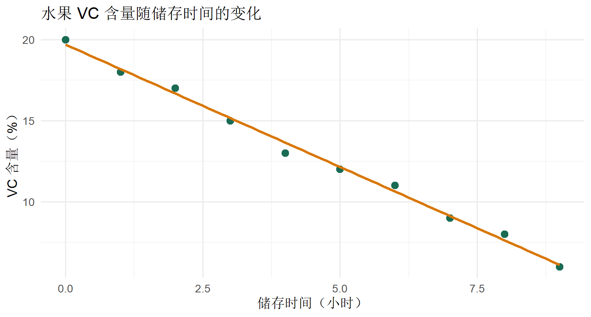
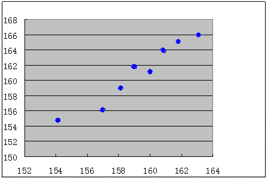
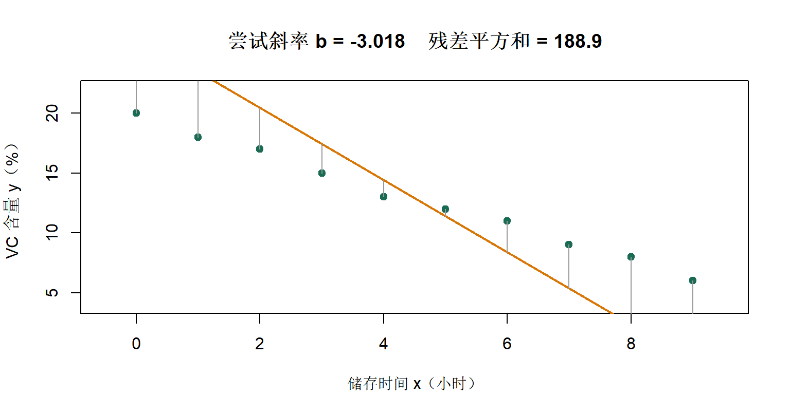
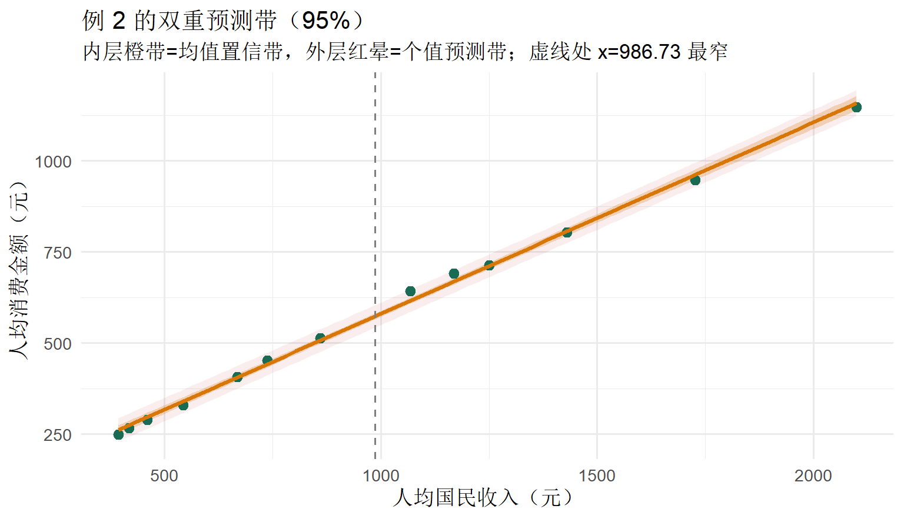
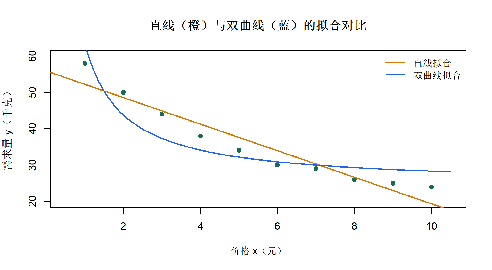

第七章 相关与回归分析
《统计学原理》R 语言交互课件
# 《统计学原理》R 课件 · 公共配置 # 每个章节 qmd 通过 ```{r, file="_setup.R"} 方式引入 :: opts_chunk$ set (comment = "#>" ,collapse = TRUE ,out.width = "88%" ,fig.align = "center" ,fig.width = 8 ,fig.height = 5 ,fig.retina = 2 ,dev.args = list (family = "sans" )# 中文友好的 ggplot 主题 if (requireNamespace ("ggplot2" , quietly = TRUE )) {:: theme_set (:: theme_minimal (base_size = 14 ) + :: theme (plot.title = ggplot2:: element_text (face = "bold" ),panel.grid.minor = ggplot2:: element_blank ()# 讲义用统一调色板 <- c ("#1a6b54" , "#d97706" , "#2563eb" , "#c2410c" , "#7c3aed" , "#0891b2" )
第一节 变量间的相关关系
本节从函数关系与相关关系的区别入手，先给出相关关系的概念、类型与相关分析的基本内容，再依次介绍判断相关关系的三种手段——相关表、相关图与相关系数，并说明相关系数的显著性检验方法。
一、相关关系的概念（函数关系与相关关系）
现象间的依存关系存在两种基本类型：
确定性关系 ：当一个变量取一个确定的值，与之有联系的另一个变量有且只有唯一的值与之相对应，两者之间的关系值是一一对应 的——即函数关系 。非确定性关系 ：当一个变量发生变化时，另一个或几个与之有联系的变量也随着发生变化，但变化的关系值不是严格依存的——即相关关系 。
从散点图上看，两类关系的区别十分直观：函数关系的散点全部落在一条直线上 ，每一个 \(x\) 值都有唯一确定的 \(y\) 值与之对应，可用函数 \(y=f(x)\) 精确描述；相关关系的散点则围绕一条直线（趋势线）上下波动 ，给定 \(x\) 的值，\(y\) 的取值仍具有随机性、不确定性。二者的本质区别在于关系的确定性程度不同。
（图示说明：左右两幅散点图对比（左图散点全在直线上表示函数关系，右图散点围绕直线波动表示相关关系），直观说明两类变量关系在确定性程度上的本质区别。）
相关关系 是指客观现象间确实存在 的、数量上不是严格对应 的依存关系。变量之间关系的体系如下：
函数关系 ——属于确定性依存关系 ；相关关系 ——属于随机性依存关系 ，其中又按性质分为三种情形：因果关系、互为因果关系、共变关系。
一、相关关系的概念（函数关系与相关关系）（续）
即：变量之间的关系按其确定性程度分为函数关系与相关关系两大类；函数关系数量上严格对应，而相关关系虽然确实存在依存关系，但数量上不是严格对应的。
（图示说明：分类示意图展示变量之间关系的体系：函数关系对应确定性依存关系，相关关系（含因果关系、互为因果关系、共变关系）对应随机性依存关系，帮助学生直观把握两类依存关系的区别与相关关系的细分。）
四、相关关系的判断方法（一）：相关表
1、简单相关表
简单相关表是将两个变量的对应取值按序号一一对应排列而成的表格，用于初步观察两变量之间是否存在相关关系。
小麦亩产量与施肥量相关表
1
55
296
2
50
325
3
65
319
4
70
374
5
74
387
6
79
406
7
80
389
8
82
434
9
84
497
10
85
528
11
86
511
12
90
535
从表中可以大致看出：随着亩施肥量的增加，亩产量总体呈上升趋势，说明两者之间存在一定的正相关关系。
2、分组相关表
当观察的资料较多时，可将自变量分组，统计各组对应的单位数，并计算各组的平均因变量值，编制分组相关表 ，用以反映两变量之间的相关关系。
产量和单位成本相关表
四、相关关系的判断方法（一）：相关表（续）
20—30
9
16.8
30—40
5
15.6
40—50
5
15.0
50—60
6
14.8
60以上
5
14.2
从表中可以看出：随着产量由低到高，平均单位成本由 16.8 元逐步下降到 14.2 元，说明产量与单位成本之间存在负相关关系。
四、相关关系的判断方法（二）：相关图（散点图）
相关图（散点图）是把两个变量的成对观测值在直角坐标系（\(x\) 为横轴、\(y\) 为纵轴）中描点而成的图形，通过点的分布形态可以直观判断变量之间相关关系的类型：
正相关 ：点大致分布在一条向右上方倾斜的直线两侧，\(x\) 增大时 \(y\) 随之增大；负相关 ：点大致分布在一条向右下方倾斜的直线两侧，\(x\) 增大时 \(y\) 随之减小；曲线相关 ：点分布在一条曲线附近，两变量之间呈非线性关系；不相关 ：点分布零散、没有规律，两变量之间不存在依存关系。
（图示说明：四幅并排的散点图示意（正相关、负相关、曲线相关、不相关），帮助学生直观识别不同相关关系类型的散点分布特征。）
课堂练习 ：对于散点图，下列说法中正确的一个是（ C ）
A. 通过散点图一定可以看出变量之间的变化规律
B. 通过散点图一定不可以看出变量之间的变化规律
C. 通过散点图可以看出正相关与负相关有明显区别
D. 通过散点图看不出正相关与负相关有什么区别
四、相关关系的判断方法（三）：相关系数
1 概念
相关系数是用以反映两变量间线性相关密切程度 的统计指标。样本相关系数记为 \(r\) 。
与第 1 章”参数—统计量”记号对照表一致：总体中两变量的线性相关程度用总体相关系数 \(\rho\) （希腊字母，读作 rho）刻画，它是未知的常数；\(r\) 是由样本算出的统计量，充当 \(\rho\) 的估计。相关分析的推断任务，正是用样本 \(r\) 去推断总体 \(\rho\) 是否显著异于 0（见本节后面的显著性检验）。
2 计算公式
相关系数 \(r\) 的定义式（离差乘积和形式）：
\[r = \frac{\sum(x-\bar{x})(y-\bar{y})}{\sqrt{\sum(x-\bar{x})^2 \cdot \sum(y-\bar{y})^2}}\]
或化简为（直接用原始数据计算的形式）：
\[r = \frac{n\sum xy - \sum x \sum y}{\sqrt{n\sum x^2 - \left(\sum x\right)^2} \cdot \sqrt{n\sum y^2 - \left(\sum y\right)^2}}\]
相关系数公式还有一系列等价形式，便于根据不同资料形式选用：
（1）定义式（协方差与标准差之比，即离差乘积和形式）：
四、相关关系的判断方法（三）：相关系数（续）
\[r = \frac{\sigma_{xy}^{2}}{\sigma_x \sigma_y} = \frac{\sum(x-\bar{x})(y-\bar{y})}{\sqrt{\sum(x-\bar{x})^2}\,\sqrt{\sum(y-\bar{y})^2}}\]
（2）把离差展开后可得（含 \(\frac{1}{n}\) 的形式）：
\[r = \frac{\sum xy - \frac{1}{n}\sum x \sum y}{\sqrt{\sum x^2 - \frac{1}{n}\left(\sum x\right)^2}\,\sqrt{\sum y^2 - \frac{1}{n}\left(\sum y\right)^2}}\]
（3）分子分母同乘 \(n\) 消去分式，得简化计算式：
\[r = \frac{n\sum xy - \sum x \sum y}{\sqrt{n\sum x^2 - \left(\sum x\right)^2}\,\sqrt{n\sum y^2 - \left(\sum y\right)^2}}\]
（4）用平均数表示的形式：
\[r = \frac{\overline{xy} - \bar{x}\bar{y}}{\sqrt{\overline{x^2} - \bar{x}^2}\,\sqrt{\overline{y^2} - \bar{y}^2}}\]
四、相关关系的判断方法（三）：相关系数（续）
以上各式在数学上完全等价，实际计算时可根据所掌握的资料形式选用最方便的一种。
3 相关系数的取值及其意义
相关系数 \(r\) 的取值范围：\(-1 \le r \le 1\) 。
\(r > 0\) 为正相关，\(r < 0\) 为负相关；\(r = 0\) 表示不存在线性关系；\(|r| = 1\) 表示完全线性相关；\(0 < |r| < 1\) 表示存在不同程度的线性相关，按 \(|r|\) 的大小划分如下：
\(|r| \le 0.3\) 微弱相关
\(0.3 < |r| \le 0.5\) 低度相关
\(0.5 < |r| \le 0.8\) 显著相关
\(0.8 < |r| < 1\) 高度相关
这一判别标准可用数轴直观表示：数轴左端 \(r = -1.0\) 为完全负相关 ，中间 \(r = 0\) 为无线性相关 ，右端 \(r = 1.0\) 为完全正相关 ；在 0 的左侧，\(r\) 越接近 \(-1.0\) ，负相关程度增加；在 0 的右侧，\(r\) 越接近 \(1.0\) ，正相关程度增加。
四、相关关系的判断方法（三）：相关系数（续）
（图示说明：数轴示意图标出相关系数 r 从完全负相关（-1.0）经无线性相关（0）到完全正相关（1.0）的方向变化，并以 0.3、0.5、0.8 为界划分微弱、低度、显著、高度相关，帮助学生直观记忆相关程度的判别标准。）
两种命名与一个前提 ：\(0.5<|r|\le 0.8\) 这一段，本教材称”显著相关”，另有教材（如胡华平《统计学原理》课件）称其为”中度相关”、称 \(|r|<0.3\) 为”极弱、可视为不相关”——阈值一致、命名有别，阅读不同教材时注意换算。更重要的是：任何分级表述都必须建立在相关系数显著性检验的基础之上 ——当 \(n\) 很小时，即使 \(|r|\) 高达 0.8 也可能并不显著（例如 \(n=5\) 时临界值约需 \(|r|>0.878\) ），分级之前先过检验关。
例1：水果储存时间与 VC 含量的相关系数计算
本例考察储存时间 \(x\) （小时）与 VC 含量 \(y\) （%）之间的关系，共 10 次测量。先用离差形式计算，下表列出各测量序号下的 \(x\) 、\(y\) 值及离差 \((x-\bar{x})\) 、\((y-\bar{y})\) 、其平方与乘积 \((x-\bar{x})(y-\bar{y})\) ，为计算相关系数做准备。
例1：水果储存时间与 VC 含量的相关系数计算（续）
1
0
20
-4.5
20.25
7.1
50.41
-31.95
2
1
18
-3.5
12.25
5.1
26.01
-17.85
3
2
17
-2.5
6.25
4.1
16.81
-10.25
4
3
15
-1.5
2.25
2.1
4.41
-3.15
5
4
13
-0.5
0.25
0.1
0.01
-0.05
6
5
12
0.5
0.25
-0.9
0.81
-0.45
7
6
11
1.5
2.25
-1.9
3.61
-2.85
8
7
9
2.5
6.25
-3.9
15.21
-9.75
9
8
8
3.5
12.25
-4.9
24.01
-17.15
10
9
6
4.5
20.25
-6.9
47.61
-31.05
合计
45
129
—
82.5
—
188.9
-124.5
例1：水果储存时间与 VC 含量的相关系数计算（续）
由合计行可得：\(\sum x = 45\) ，\(\sum y = 129\) ，\(\sum(x-\bar{x})^2 = 82.5\) ，\(\sum(y-\bar{y})^2 = 188.9\) ，\(\sum(x-\bar{x})(y-\bar{y}) = -124.5\) 。
解： 将上表合计行的各离差平方和与离差乘积和代入相关系数公式：
\[r = \frac{\sum(x-\bar{x})(y-\bar{y})}{\sqrt{\sum(x-\bar{x})^2} \cdot \sqrt{\sum(y-\bar{y})^2}} = \frac{-124.5}{\sqrt{82.5 \times 188.9}} = -0.997\]
结论： 计算结果说明 VC 含量与储存时间存在高度的负相关 关系。
上例用推导后的（化简）公式计算可以得出同样的结论。使用化简公式所需的各列 \(x^2\) 、\(y^2\) 、\(xy\) 及其合计如下：
例1：水果储存时间与 VC 含量的相关系数计算（续）
1
0
20
0
400
0
2
1
18
1
324
18
3
2
17
4
289
34
4
3
15
9
225
45
5
4
13
16
169
52
6
5
12
25
144
60
7
6
11
36
121
66
8
7
9
49
81
63
9
8
8
64
64
64
10
9
6
81
36
54
合计
45
129
285
1853
456
由合计行得 \(\sum x = 45\) ，\(\sum y = 129\) ，\(\sum x^2 = 285\) ，\(\sum y^2 = 1853\) ，\(\sum xy = 456\) 。将各项合计数代入相关系数的化简公式（\(n = 10\) ）：
例1：水果储存时间与 VC 含量的相关系数计算（续）
\[r = \frac{n\sum xy - \sum x \sum y}{\sqrt{n\sum x^2 - \left(\sum x\right)^2}\,\sqrt{n\sum y^2 - \left(\sum y\right)^2}} = \frac{10 \times 456 - 45 \times 129}{\sqrt{10 \times 285 - 45^2}\,\sqrt{10 \times 1853 - 129^2}} = \frac{-1245}{1248.37} = -0.997\]
计算结果与前面一致。
例2：我国人均国民收入与人均消费金额的相关系数计算
在研究我国人均消费水平的问题中，把全国人均消费额记为 \(y\) ，把人均国民收入记为 \(x\) 。我们收集到 1981～1993 年的样本数据 \((x_i, y_i)\) ，\(i = 1, 2, \ldots, 13\) ，数据见下表，计算相关系数。
我国人均国民收入与人均消费金额数据（单位：元）
1981
393.8
249
1988
1068.8
643
1982
419.14
267
1989
1169.2
690
1983
460.86
289
1990
1250.7
713
1984
544.11
329
1991
1429.5
803
1985
668.29
406
1992
1725.9
947
1986
737.73
451
1993
2099.5
1148
1987
859.97
513
解： 根据样本相关系数的计算公式有
例2：我国人均国民收入与人均消费金额的相关系数计算（续）
\[r = \frac{n\sum xy - \sum x \sum y}{\sqrt{n\sum x^2 - \left(\sum x\right)^2} \cdot \sqrt{n\sum y^2 - \left(\sum y\right)^2}} = \frac{13 \times 9156173.99 - 12827.5 \times 7457}{\sqrt{13 \times 16073323.77 - \left(12827.5\right)^2} \cdot \sqrt{13 \times 5226399 - \left(7457\right)^2}} = 0.9987\]
即人均国民收入与人均消费金额之间的相关系数为 0.9987。
相关系数的显著性检验
检验两个变量之间是否存在线性相关关系，等价于对回归系数 \(b\) 的检验。步骤如下：
（1）提出假设
\[H_0: \rho = 0; \qquad H_1: \rho \ne 0\]
（2）计算检验统计量
\[t = \frac{r\sqrt{n-2}}{\sqrt{1-r^2}} \sim t(n-2)\]
（3）确定显著性水平 \(\alpha\) ，并作出决策
若 \(|t| > t_{\alpha/2}\) ，拒绝 \(H_0\) ，相关关系显著；
若 \(|t| < t_{\alpha/2}\) ，接受 \(H_0\) ，相关关系不显著。
例3：对例 2 计算的相关系数进行显著性检验（α = 0.05）
解：
（1）提出假设：
\[H_0: \rho = 0; \qquad H_1: \rho \ne 0\]
（2）计算检验的统计量：
\[t = \frac{0.9987\sqrt{13-2}}{\sqrt{1-0.9987^2}} = 64.9809\]
（3）作出决策：
由于 \(|t| = 64.9809 > t_{\alpha/2}(13-2) = 2.201\) ，拒绝 \(H_0\) ，人均消费金额与人均国民收入之间的相关关系显著，不能否认总体两变量存在线性相关。
应用相关系数时要注意的问题
1、相关系数只适合测定两个变量线性相关的密切程度。 如果 \(r\) 较小，并非一定说明二者之间没有相关关系或相关程度很低，也许现象间还存在其他形式的相关关系。
2、相关系数数值与观测的数据多少有关系。 当 \(n\) 较小时，\(r\) 波动较大；当 \(n\) 较大时，\(r\) 的绝对值容易偏小。
相关矩阵与秩相关：多变量情形的读法
实际问题中变量往往不止两个（如第三节多元回归中的收入与价格），逐对计算相关系数之后，规范的呈现方式是相关矩阵 ：以变量为行与列，第 \(i\) 行第 \(j\) 列的元素即变量 \(i\) 与变量 \(j\) 的相关系数。对角线恒为 1；由对称性 \(r_{XY}=r_{YX}\) ，通常只显示下三角 部分。
银行贷款相关矩阵（Pearson，下三角显示） ：某商业银行 25 家分行的不良贷款、贷款余额、应收贷款、贷款项目数、固定资产投资五个变量的相关矩阵如下（数据出自贾俊平《统计学》经典案例，此处按素材原样引用）：
不良贷款
1.0000
贷款余额
0.8436
1.0000
应收贷款
0.7315
0.6788
1.0000
贷款项目数
0.7003
0.8484
0.5858
1.0000
固定资产投资
0.5185
0.7797
0.4724
0.7466
1.0000
相关矩阵与秩相关：多变量情形的读法（续）
读法 ：不良贷款与贷款余额的相关程度最高（\(r=0.8436\) ，经前述 t 检验 \(t=7.53>t_{0.025}(23)=2.07\) ，显著），与固定资产投资的相关程度最低（0.5185）——若要建立”不良贷款倚其余变量”的多元回归，贷款余额应是首要候选解释变量；而贷款余额与贷款项目数之间也高度相关（0.8484），同时纳入会遇到第三节将提醒的”自变量之间高度相关”问题。一张矩阵，既指出了候选变量，也预告了多元回归的隐患。
秩相关（Spearman） ：把每个变量的取值换成名次（秩）再计算相关系数，即得 Spearman 秩相关系数。它只要求两变量单调 相关（不限于直线），且对个别异常值不敏感，是 Pearson 相关系数的稳健替代。如上例贷款余额与不良贷款的 Spearman 秩相关系数为 0.8339，与 Pearson 的 0.8436 接近，说明这一线性关系并非个别极端值造成的。
警示框：巧克力与诺贝尔奖 。有研究发现，各国人均巧克力消费量与诺贝尔奖获得者人数呈显著正相关。能否由此断言”吃巧克力有助于得诺奖”？不能——两者很可能都只是国民经济发展水平这一混杂变量 的共同结果。相关关系不等于因果关系 ；判断因果之前，先问一句”是否存在第三个变量同时影响两者？“这与本节”互为因果关系、共变关系”的分类一脉相承：高度相关只说明”共变”，方向的判定需要理论与更进一步的研究设计。
第二节 一元线性回归模型
本节在相关分析的基础上建立一元线性回归模型：先给出回归分析的概念及与相关分析的联系区别，再利用最小平方法估计模型参数、建立回归方程，进而用判定系数与估计标准误评价拟合优度，对模型进行显著性检验，最后利用回归方程进行点估计与区间估计预测。
R 实践 · 例 1 的 R 重算：散点图与相关系数
# 例1：水果储存时间 x（小时）与 VC 含量 y（%） <- data.frame (x = 0 : 9 ,y = c (20 , 18 , 17 , 15 , 13 , 12 , 11 , 9 , 8 , 6 )cor (vc$ x, vc$ y) # 相关系数 r ≈ -0.998：高度负相关 #> [1] -0.9973013
library (ggplot2)ggplot (vc, aes (x, y)) + geom_point (size = 3 , color = "#1a6b54" ) + geom_smooth (method = "lm" , se = FALSE , color = "#d97706" ) + labs (title = "水果 VC 含量随储存时间的变化" ,x = "储存时间（小时）" , y = "VC 含量（%）" ) + theme_minimal (base_size = 13 )

一、回归分析的概念1 概念运用数学方法测定相关变量间的一般关系的分析过程。回归分析方法就是通过对已有相关资料的分析，找出其变化规律性，建立适宜的数学模型或经验公式，使现象间数量上的不确定、不严格的相互依存关系变为确定性的、严格的函数关系，即将这种数量关系一般化、平均化。
思想实验：60 户”微型总体”——样本回归线为什么每次都不同
回归分析有一个不易直观体会的难点：总体回归方程 \(E(Y)=\alpha+\beta x\) 不可观测，我们手上只有一条样本回归线，凭什么用它代表总体？下面的假想实验给出一个”上帝视角”。
构造一个已知的总体 。设想由 60 个家庭构成的总体：家庭月收入 \(X\) 取 80、100、120、…、260 共 10 个水平，每个收入水平下有 3～7 户对应的月支出 \(Y\) 。因为总体完全已知，每个收入水平下支出的条件期望 可以精确算出：
\(E(Y\|X)\) 65
77
89
101
113
125
137
149
161
173
条件期望恰好落在一条直线上——收入每提高 20 元，期望支出恰好增加 12 元，即总体回归方程为 \(E(Y|X)=17+0.6X\) ；而全体 60 户的无条件期望 \(E(Y)=7272/60=121.2\) 。总体回归线”存在且已知”，这是现实中永远得不到的待遇。
抽两份随机样本 。从 60 户中各随机抽取 10 户（每个收入水平抽 1 户），分别用最小平方法拟合，得到两条样本回归线：
二、一元线性回归模型（总体回归模型与基本假定）（续）
\(E(\varepsilon)=0\) （零均值）保证 \(a\) 、\(b\) 是 \(\alpha\) 、\(\beta\) 的无偏估计，回归线”对准”总体回归线
同方差 \(\sigma_{\varepsilon}^{2}=\sigma^{2}\)
全部误差可用一个 \(\sigma\) 概括，估计标准误 \(S_{xy}\) 与 \(\hat{\sigma}_b\) 才有意义
\(\varepsilon\) 值相互独立各次观测信息不重复，离差平方和才能分解（SST=SSR+SSE）、方差才可加
\(\varepsilon\) 服从正态分布构造 \(t\) 、\(F\) 统计量与各种区间估计的分布依据
一句话：零均值与同方差保”估得准”，独立性保”算得动”，正态性保”检得出” 。至于”假定违反了怎么发现”，见本节末的”残差诊断”小节。
总体一元线性回归方程
\[E(Y) = \alpha + \beta x\]
平均来看，\(Y\) 与 \(X\) 的关系能够用直线反映。在 \(X\) 值给定的条件下，\(Y\) 的期望值是 \(X\) 的严密线性函数。
样本（或估计的）一元线性回归方程
\[\hat{y} = a + bx\]
残差诊断：假定违反了怎么发现
四条基本假定都是对不可观测 的 \(\varepsilon\) 提出的，如何检查它们是否成立？答案是看 \(\varepsilon\) 的”替身”——残差 \(e_i = y_i - \hat{y}_i\) 。残差分析有三大用途：刻画用回归方程预测的误差（\(S_{xy}\) 即由残差平方和而来）；检验随机误差项的假定是否成立 ；检测可疑的、有影响的观测值。
标准化残差 。把残差除以估计标准误，得到无量纲的标准化残差：
\[e_i^* = \frac{e_i}{S_{xy}}\]
经验规则：\(|e_i^*|>2\) 的观测值得警惕，\(|e_i^*|>3\) 高度可疑。如对例 2 的回归逐点计算（用 \(\hat{y}=54.2229+0.52638x\) 与 \(S_{xy}=14.95\) ），13 个标准化残差的绝对值最大约 1.75（1988 年观测），均未超过 2，没有可疑点。
残差图五形态诊断 。以 \(x\) （或拟合值 \(\hat{y}\) ）为横轴、残差（或标准化残差）为纵轴作散点图，对照以下五种典型形态判断模型何处出了问题：
残差诊断：假定违反了怎么发现（续）
（a）正常
点在横轴上下无规则散布成一条水平带 ，带宽大致恒定
线性、同方差假定基本满足
模型可用
（b）喇叭形
残差随 \(x\) 增大越散越开 （或越收越窄）
异方差 （违反同方差假定）加权最小二乘、变量变换
（c）倾斜带
水平带整体向上或向下倾斜
计算或模型设定有误（如漏掉常数项）
核查计算与模型
（d）倒 U 形
残差先降后升（或先升后降），呈拱形
缺少二次项（线性假定不成立）
加入 \(x^2\) 项
（e）曲线形
残差呈现其他系统性曲线
函数形式不当
改用曲线模型（见第四节非线性回归）
判读要点：残差图只要呈现任何系统的、有规律的形态 （而不是无规则的水平带），就提示相应假定被违反、模型需要修正。
二、一元线性回归模型的确定：最小平方法（y 倚 x 的回归方程）
根据实际数据（用未分组资料），用最小平方法 ，即使 \(\sum(y - \hat{y})^2\) 达到最小：
\[Q = \sum(y - \hat{y})^2 = \sum(y - a - bx)^2 = \min\]
分别对 \(a\) 、\(b\) 求偏导并令其为零，求得两个标准方程。令 \(Q = \sum(y - a - bx)^2\) ，则
\[\frac{\partial Q}{\partial a} = 2\sum(y - a - bx)(-1) = 0\]
\[\frac{\partial Q}{\partial b} = 2\sum(y - a - bx)(-x) = 0\]
整理得标准方程组：
\[\begin{cases} \sum y = na + b\sum x \\ \sum xy = a\sum x + b\sum x^2 \end{cases}\]
二、一元线性回归模型的确定：最小平方法（y 倚 x 的回归方程）（续）
最小平方法（最小二乘法）的拟合思想可图示如下：对给定的观测散点 \((x_1, y_1)\) 、\((x_2, y_2)\) 、\(\ldots\) 、\((x_i, y_i)\) 、\(\ldots\) 、\((x_n, y_n)\) ，寻找一条拟合直线 \(\hat{y} = a + bx\) ，使各观测点 \(y_i\) 与直线上对应的估计值 \(\hat{y}_i\) 之间的离差 \(e_i = y_i - \hat{y}_i\) 在总体上达到最小，即最小二乘法通过使全部离差的平方和最小来确定截距 \(a\) 与斜率 \(b\) ，从而得到最优拟合的回归直线，散点分布在回归直线两侧，各点到直线的竖直离差直观展示了这一拟合原则。
（图示说明：示意图展示散点、回归直线 ŷ=a+bx 与竖直离差 ei=yi-ŷi，直观说明最小二乘法“使离差平方和最小”的拟合原则。）
由最小平方法的两个标准方程联立求解，得
\[b = \frac{n\sum xy - \sum x \sum y}{n\sum x^2 - \left(\sum x\right)^2}\]
\[a = \frac{\sum y}{n} - b\,\frac{\sum x}{n} = \bar{y} - b\bar{x}\]
其中 \(\bar{x} = \frac{1}{n}\sum x\) ，\(\bar{y} = \frac{1}{n}\sum y\) 。b 还可写成等价形式：
二、一元线性回归模型的确定：最小平方法（y 倚 x 的回归方程）（续）
\[b = \frac{\sum xy - \frac{1}{n}\sum x \sum y}{\sum x^2 - \frac{1}{n}\left(\sum x\right)^2} = \frac{\sum(x-\bar{x})(y-\bar{y})}{\sum(x-\bar{x})^2}\]
b 的含义 ：\(b\) 表明自变量 \(x\) 每变动一个单位时，变量 \(y\) 的平均变动值。
回归直线的一个重要性质 ：由标准方程已解得 \(a = \bar{y} - b\bar{x}\) 。如果将它代入回归方程 \(\hat{y} = a + bx\) ，可得
\[\hat{y} = (\bar{y} - b\bar{x}) + bx\]
移项整理得
\[\hat{y} - \bar{y} = b(x - \bar{x})\]
可以看出，当 \(x = \bar{x}\) 时，\(\hat{y} = \bar{y}\) ，即回归直线将通过点 \((\bar{x}, \bar{y})\) 。
回归系数与相关系数的关系及回归方程的可能形态
回归系数与相关系数的关系 ：
\[b = r\,\frac{\sigma_y}{\sigma_x}; \qquad r = b\,\frac{\sigma_x}{\sigma_y}\]
回归系数 \(b\) 的符号与相关系数 \(r\) 的符号一致：
\(r > 0\) \(b > 0\)
\(r < 0\) \(b < 0\)
\(r = 0\) \(b = 0\)
由此，估计的回归方程有三种可能形态：
当 \(b > 0\) 时，回归直线自左下向右上倾斜，\(y\) 随 \(x\) 的增大而增大；
当 \(b < 0\) 时，回归直线自左上向右下倾斜，\(y\) 随 \(x\) 的增大而减小；
当 \(b = 0\) 时，回归直线为一条水平线，\(x\) 与 \(y\) 之间不存在线性关系。
（图示说明：三幅坐标系示意图分别展示 b>0、b<0、b=0 时回归直线的形态，直观说明回归系数符号与直线倾斜方向的关系。）
回归直线的特点
（1）回归直线的走向，是由回归系数 \(b\) 决定的。
（2）回归直线满足 $(y - )^2 = $ 最小，是一条最适线。 即回归直线使所有观测值 \(y\) 与回归估计值 \(\hat{y}\) 的离差平方和达到最小。
（3）回归直线一定通过点 \((\bar{x}, \bar{y})\) 。
在最小平方法下，除上述三条外，样本回归线还有三条”隐性特点”（证明从略）：
（4）拟合值的均值等于因变量的均值 ：\(\dfrac{1}{n}\sum\hat{y} = \bar{y}\) 。
（5）残差均值为零 ：\(\dfrac{1}{n}\sum(y-\hat{y}) = 0\) ——回归线”平均地”穿过全部观测。
（6）残差与自变量 \(x\) 、拟合值 \(\hat{y}\) 均不相关 ：\(\sum(x-\bar{x})(y-\hat{y})=0\) ，\(\sum(\hat{y}-\bar{y})(y-\hat{y})=0\) ——\(x\) 中可作线性解释的信息已全部装入回归线，剩下的残差是”纯随机”部分。
后三条正是”残差诊断”小节可以用 \(\hat{y}\) 作横轴画残差图的理由，也是离差平方和分解 \(\text{SST}=\text{SSR}+\text{SSE}\) 中交叉项为零的保证。
回归直线的特点（续）
估计值与估计量之辨 ：同一个符号 \(b\) 有双重身份——作为估计量 ，\(b=\dfrac{\sum(x-\bar{x})(y-\bar{y})}{\sum(x-\bar{x})^2}\) 是样本的函数、是随机变量（“60 户微型总体”中随样本而变的两条回归线正说明了这一点）；作为估计值 ，把一组具体数据代入后它是一个确定的数。这与 \(\bar{x}\) 既是统计量又是算得的均值，是同一个道理。
x 倚 y 的回归方程
具有相关关系的两个变量，必须是互为因果关系才能建立互换回归方程。
x 倚 y 的回归方程为：
\[\hat{x} = a' + b'y\]
其中参数的计算公式为：
\[a' = \frac{\sum x}{n} - b'\frac{\sum y}{n}\]
\[b' = \frac{\sum xy - \frac{1}{n}\left(\sum x\right)\left(\sum y\right)}{\sum y^2 - \frac{1}{n}\left(\sum y\right)^2}\]
与 y 倚 x 的回归方程相对照，这里以 \(y\) 为自变量、\(x\) 为被估计变量，参数记号改用 \(a'\) 、\(b'\) 。
例4：接例 1，求水果中 VC 含量与储存时间的回归方程
在例1储存时间 \(x\) （小时）与 VC 含量 \(y\) （%）数据的基础上，计算表列出 \(x^2\) 、\(y^2\) 、\(xy\) 各列及合计，用于按最小平方法求回归方程，表中最后一列为按所求回归方程计算的各估计值 \(\hat{y}\) 。
例4：接例 1，求水果中 VC 含量与储存时间的回归方程（续）
1
0
20
0
400
0
19.70
2
1
18
1
324
18
18.19
3
2
17
4
289
34
16.68
4
3
15
9
225
45
15.17
5
4
13
16
169
52
13.66
6
5
12
25
144
60
12.15
7
6
11
36
121
66
10.64
8
7
9
49
81
63
9.13
9
8
8
64
64
64
7.62
10
9
6
81
36
54
6.11
合计
45
129
285
1853
456
—
解： 将以上数据代入公式
例4：接例 1，求水果中 VC 含量与储存时间的回归方程（续）
\[b = \frac{n\sum xy - \sum x \sum y}{n\sum x^2 - \left(\sum x\right)^2} = \frac{10 \times 456 - 45 \times 129}{10 \times 285 - 45^2} = \frac{-1245}{825} = -1.51\]
\[a = \bar{y} - b\bar{x} = \frac{129}{10} + \frac{1.51 \times 45}{10} = 19.70\]
所以水果中 VC 含量与储存时间关系的回归方程为：
\[\hat{y} = 19.70 - 1.51x\]
方程表明，水果中维生素 C 含量的理论起点值为 19.70%，当储存时间每延长 1 小时，维生素 C 的含量平均降低 1.51%。
例5：企业工业生产用固定资产与工业总产值的相关与回归（续）
\[r = \frac{6 \times 250.1 - 24 \times 54}{\sqrt{6 \times 111.8 - 24^2} \cdot \sqrt{6 \times 564.5 - 54^2}} = \frac{204.6}{\sqrt{91.68 \times 471}} = 0.9846\]
两者为高度正相关。
解（2）建立直线回归方程并预测。
求回归系数 \(b\) ：
\[b = \frac{n\sum xy - \sum x \sum y}{n\sum x^2 - \left(\sum x\right)^2} = \frac{204.6}{91.68} = 2.2317\]
求截距 \(a\) ：
\[a = \bar{y} - b\bar{x} = 9 - 2.2317 \times 4 = 0.0733\]
直线回归方程：
\[y_c = 0.0733 + 2.2317x\]
经济含义： 表明工业生产用固定资产每增加一百万元，工业总产值平均上升 2.2317 百万元。
预测： 当 \(x = 8\) （百万元）时，
\[y_c = 0.0733 + 2.2317 \times 8 = 17.9269\]
例6：母女身高的相关与回归
下表是随机抽取的 8 对母女的身高数据，试根据这些数据探讨 \(y\) 与 \(x\) 之间的关系。
女儿身高 y/cm
155
156
159
162
161
164
165
166
解： 画出散点图。以母亲身高 \(x\) 为横轴、女儿身高 \(y\) 为纵轴的散点图中，8 对数据逐点描出后，各点大致分布在一条向右上方倾斜的直线附近，即女儿身高随母亲身高的增大而增大，说明两者之间存在正相关关系，可进一步做线性回归分析。

在求相关系数与回归方程之前，先列表整理数据，逐项计算 \(x_i^2\) 、\(y_i^2\) 、\(x_i y_i\) ，并求出各列合计。
例6：母女身高的相关与回归（续）
1
154
155
23716
24025
23870
2
157
156
24649
24336
24492
3
158
159
24964
25281
25122
4
159
162
25281
26244
25758
5
160
161
25600
25921
25760
6
161
164
25921
26896
26404
7
162
165
26244
27225
26730
8
163
166
26569
27556
27058
Σ
1274
1288
202944
207484
205194
其中均值：
\[\bar{x} = \frac{\sum x_i}{n} = 159.25, \qquad \bar{y} = \frac{\sum y_i}{n} = 161\]
计算相关系数。 相关系数的计算公式为：
例6：母女身高的相关与回归（续）
\[r = \frac{\sum_{i=1}^{n} x_i y_i - n\bar{x}\bar{y}}{\sqrt{\left(\sum_{i=1}^{n} x_i^2 - n\bar{x}^2\right)\left(\sum_{i=1}^{n} y_i^2 - n\bar{y}^2\right)}}\]
代入本题数据（\(n = 8\) ，\(\bar{x} = 159.25\) ，\(\bar{y} = 161\) ）：
\[r = \frac{205194 - 8 \times 159.25 \times 161}{\sqrt{\left(202944 - 8 \times 159.25^2\right)\left(207484 - 8 \times 161^2\right)}} = \frac{80}{\sqrt{59.5 \times 116}} \approx 0.963\]
结论： 因为 \(r = 0.963\) 接近 1，所以 \(x\) 与 \(y\) 具有较强的线性相关关系。
建立线性回归模型。 设线性回归模型为 \(\hat{y} = a + bx\) （\(n = 8\) ）。
求回归系数 \(b\) ：
例6：母女身高的相关与回归（续）
\[b = \frac{\sum_{i=1}^{n} x_i y_i - n\bar{x}\bar{y}}{\sum_{i=1}^{n} x_i^2 - n\bar{x}^2} = \frac{\sum_{i=1}^{n} x_i y_i - 8\bar{x}\bar{y}}{\sum_{i=1}^{n} x_i^2 - 8\bar{x}^2} \approx 1.345\]
求截距 \(a\) ：
\[a = \bar{y} - b\bar{x} \approx -53.191\]
故 \(y\) 对 \(x\) 的线性回归方程为：
\[\hat{y} = -53.191 + 1.345x\]
三、判定系数（r²）与估计标准误（S_xy）：拟合优度与离差平方和的分解
回归方程在一定程度上描述了变量 \(x\) 与 \(y\) 之间的数量关系，据此可根据 \(x\) 的值预测 \(y\) 的数值，但是估计的精度如何，取决于回归直线对观测值的拟合程度。
各观测值越是紧密围绕直线，说明直线对观测数据的拟合程度越好，估计的精度就越好，反之越差。各观测值与回归直线的接近程度被称为回归直线对观测数据的拟合优度 。测定拟合优度的指标：判定系数 、估计标准误差 。
对于回归直线 \(\hat{y} = a + bx\) ，每个观测点的离差可分解为两部分：
\[y_i - \bar{y} = (\hat{y}_i - \bar{y}) + (y_i - \hat{y}_i)\]
即：总偏差 = 回归偏差 + 剩余偏差 。
两边平方并求和，得到离差平方和的分解式：
\[\sum(y_i - \bar{y})^2 = \sum(\hat{y}_i - \bar{y})^2 + \sum(y_i - \hat{y}_i)^2\]
\[\text{SST} = \text{SSR} + \text{SSE}\]
总偏差 ：反映因变量的 \(n\) 个观察值与其均值的总离差；回归偏差（被回归解释的偏差） ：反映由于 \(x\) 与 \(y\) 之间的线性关系引起的 \(y\) 的取值变化；剩余偏差（未被解释的偏差，残差） ：反映除 \(x\) 以外的其他因素对 \(y\) 取值的影响。
三、判定系数（r²）与估计标准误（S_xy）：拟合优度与离差平方和的分解（续）
（图示说明：坐标系示意图画出回归直线 ŷ=a+bx 与均值线 ȳ，并用括线直观标出 yi−ȳ 分解为 ŷi−ȳ 与 yi−ŷi 两段，帮助学生理解离差平方和分解的几何意义。）
判定系数的概念
判定系数是回归平方和占总离差平方和的比例 ，用 \(r^2\) 表示：
\[r^2 = \frac{\sum\left(\hat{y} - \bar{y}\right)^2}{\sum\left(y - \bar{y}\right)^2}\]
或
\[r^2 = 1 - \frac{\sum\left(y - \hat{y}\right)^2}{\sum\left(y - \bar{y}\right)^2}\]
要点：
取值范围： \(0 \le r^2 \le 1\) ；判定系数是对回归模型拟合优度 的评价：\(R^2 \to 1\) ，说明回归方程拟合得越好；\(R^2 \to 0\) ，说明回归方程拟合得越差；
判定系数等于相关系数的平方 ，即 \(r^2 = (r)^2\) ；
注意： 判定系数无方向性，相关系数则有方向，其方向与样本回归系数 \(b\) 相同。
判定系数的常用计算公式与例7
判定系数 \(r^2\) 的简算公式
\[r^2 = \frac{a\sum y + b\sum xy - n\bar{y}^2}{\sum y^2 - n\bar{y}^2}\]
利用已求得的回归系数 \(a\) 、\(b\) 以及各求和量，可直接计算判定系数 \(r^2\) 。
例7：根据例1计算判定系数。 沿用例1的相关系数计算表（\(n=10\) ，\(\sum x=45\) ，\(\sum y=129\) ，\(\sum x^2=285\) ，\(\sum y^2=1853\) ，\(\sum xy=456\) ，见前文例1）及例4求得的回归方程 \(\hat{y} = 19.70 - 1.51x\) （原课件在此完整重列了同一套计算表及 \(r=-0.997\) 、回归方程的求解演算，结果与前文一致），计算得：
\[r^2 = 0.994\]
结果解释： 说明我们拟合回归模型产生的偏差中，99.4%的偏差是由储存时间和Vc的依存关系来解释的，其余0.6%是随机误差。
R 实践 · lm() 一步到位：回归、检验与判定系数
<- lm (y ~ x, data = vc) # 一元线性回归 summary (fit) # 系数、t 检验、R² 一应俱全 #> #> Call: #> lm(formula = y ~ x, data = vc) #> #> Residuals: #> Min 1Q Median 3Q Max #> -0.6545 -0.1591 -0.1182 0.3227 0.3818 #> #> Coefficients: #> Estimate Std. Error t value Pr(>|t|) #> (Intercept) 19.69091 0.20968 93.91 1.85e-13 *** #> x -1.50909 0.03928 -38.42 2.31e-10 *** #> --- #> Signif. codes: 0 '***' 0.001 '**' 0.01 '*' 0.05 '.' 0.1 ' ' 1 #> #> Residual standard error: 0.3568 on 8 degrees of freedom #> Multiple R-squared: 0.9946, Adjusted R-squared: 0.9939 #> F-statistic: 1476 on 1 and 8 DF, p-value: 2.313e-10
# 系数对照：截距 19.70，斜率 -1.51（与手算一致） coef (fit)#> (Intercept) x #> 19.690909 -1.509091 c (判定系数 = summary (fit)$ r.squared, # R² = 99.6% = summary (fit)$ sigma) # 对应手算的 Sxy #> 判定系数 估计标准误 #> 0.9946099 0.3567530
估计标准误（S_xy）
1、概念
\(S_{xy}\) 是二元正态分布中因变量实际值（\(y_i\) ）对估计值（\(\hat{y}_i\) ）离散程度的量度。
要点：
反映实际观察值在回归直线周围的分散状况；
从另一个角度说明了回归直线的拟合程度。
\(S_{xy}\) 越小，拟合越好；\(S_{xy}\) 越大，拟合越差。
2、公式
估计标准误的定义公式（剩余偏差）：
\[S_{xy} = \sqrt{\frac{\sum\left(y - \hat{y}\right)^2}{n-2}}\]
简算公式：
\[S_{xy} = \sqrt{\frac{\sum y^2 - a\sum y - b\sum xy}{n-2}}\]
3、\(S_{xy}\) 也是用自变量对因变量进行区间估计的抽样误差。
估计标准误（S_xy）（续）
为什么分母是 \(n-2\) ，不是 \(n\) 也不是 \(n-1\) ？ 拟合 \(a\) 、\(b\) 两个参数用掉了 2 个自由度，残差中只剩 \(n-2\) 份”自由信息”，故 \(\hat{\sigma}^2=\sum e_i^2/(n-2)\) 。这与第 4 章”总体方差用 \(n\) 、样本方差 \(S^2\) 用 \(n-1\) “的双轨说明一脉相承：估计几个参数，就损失几个自由度 。软件约定同此：R 的 var()/sd()、Excel 的 STDEV.S 分母用 \(n-1\) ，而回归的残差标准误分母用 \(n-2\) （多元回归为 \(n-k-1\) ，见第三节 \(S_{y(x_1,x_2)}\) 的 \(n-3\) ）。
例8：接例1
\[S_{xy} = \sqrt{\frac{1853 - 19.70 \times 129 + 1.51 \times 456}{10 - 2}} = 0.18\]
说明水果中维生素C含量的实际观测值与理论估计值之间的平均离差为0.18%。
回归估计标准差与一般标准差的比较
一般标准差 反映的是各变量值与其平均数的平均差异程度，表明其平均数对各变量值的代表性强弱。
估计标准误差 反映的是因变量的各实际值与其估计值之间的平均差异程度，表明其估计值对各实际值的代表性强弱；其值越小，估计值 \(y_c\) （或回归方程）的代表性越强，用回归方程估计或预测的结果越准确。
R 实践 · 最小二乘法的直觉：残差平方和如何被压到最小（动画）
<- coef (fit); n <- nrow (vc)for (i in 1 : 12 ) {<- seq (b[2 ] * 2 , b[2 ], length.out = 12 )[i] # 斜率从"离谱"逼近最优 <- mean (vc$ y) - beta * mean (vc$ x)plot (vc$ x, vc$ y, pch = 19 , col = "#1a6b54" , xlim = c (- 0.5 , 9.5 ), ylim = c (4 , 22 ),xlab = "储存时间 x（小时）" , ylab = "VC 含量 y（%）" ,main = sprintf ("尝试斜率 b = %.3f 残差平方和 = %.1f" ,sum ((vc$ y - a - beta * vc$ x)^ 2 )))abline (a = a, b = beta, col = "#d97706" , lwd = 2 )segments (vc$ x, vc$ y, vc$ x, a + beta * vc$ x, col = "grey60" )

灰色线段是残差 （实际值 − 线上值）。最小二乘法寻找的直线，就是让所有残差的平方和最小 的那条——动画最后一帧即 lm() 的解。
四、一元线性回归模型的显著性检验：回归系数 b 的检验
检验所建立的一元线性回归方程是否成立，即相关的两变量是否存在线性关系。
设总体回归系数为 \(\beta\) ，建立假设：
\[H_0: \beta = 0; \quad H_1: \beta \neq 0\]
检验统计量：
\[Z = \frac{b - \beta}{\sigma_b} \quad (\beta = 0)\]
给定显著性水平 \(\alpha\) ，查 Z 表可知其临界值 \(Z_{\alpha/2}\) 。
\[t = \frac{b - \beta}{\hat{\sigma}_b} \quad (\beta = 0)\]
给定显著性水平 \(\alpha\) ，查 t 表可知其临界值 \(t_{\alpha/2}(n-2)\) 。
说明： \(\sigma_b\) 是样本回归系数抽样分布的标准差，通常是未知的，用其估计量 \(\hat{\sigma}_b\) 代替：
\[\hat{\sigma}_b = \sqrt{\frac{S_{xy}^2}{\sum\left(x - \bar{x}\right)^2}} = \sqrt{\frac{\left(\sum y^2 - a\sum y - b\sum xy\right)/\left(n-2\right)}{\sum x^2 - n\bar{x}^2}}\]
例8：对例 2 的回归系数进行显著性检验（α = 0.05）
1、提出假设
\[H_0: \beta = 0 \quad\quad H_1: \beta \neq 0\]
2、计算检验的统计量
\[t = \frac{b}{\hat{\sigma}_b} = \frac{0.52638}{\sqrt{\frac{14.95^2}{3416034.827}}} = 65.0758\]
结论： \(t = 65.0758 > t_{\alpha/2} = 2.201\) ，拒绝 \(H_0\) ，表明人均收入与人均消费之间有线性关系。
回归模型整体的 F 检验
假设
\[H_0: R^2 = 0; \quad H_1: R^2 \neq 0\]
检验统计量
\[F = \frac{\text{回归偏差}/\text{自由度}}{\text{剩余偏差}/\text{自由度}} = \frac{\sum\left(\hat{y} - \bar{y}\right)^2 / 1}{\sum\left(y - \hat{y}\right)^2 / \left(n - 2\right)}\]
分子（回归偏差）的自由度为 \(1\) ，分母（剩余偏差）的自由度为 \(n-2\) 。
给定显著性水平 \(\alpha\) ，临界值为 \(F_{\alpha}(n, m)\) ，\(F\) 分布曲线下临界值右侧的阴影区域为拒绝域。
（图示说明：F 分布右偏曲线示意图：横轴为 F，在临界值 Fα(n,m) 处右侧画出阴影拒绝域，直观展示右侧检验的判断规则。）
检验的规范表述：p 值与置信区间检验法
除了”查临界值、比大小”的显著性检验法，还有两种等价 的判断方式，在软件输出中更为常见。
（1）p 值法 。p 值指在 \(H_0\) 成立的前提下，取得比当前样本更极端结果的概率。判断规则：p < \(\alpha\) 则拒绝 \(H_0\) 。它无须事先约定 \(\alpha\) ，把”犯第一类错误的风险”直接量化出来交给读者评判。软件输出中随处可见：Excel 回归报告系数表的”P-value”、方差分析区的”Significance F”（F 检验的 p 值），R 输出的 Pr(>|t|) 都是它。例如例 8 中 \(t=65.08\) ，对应 p 值远小于 0.0001，在 \(\alpha=0.05\) 下拒绝 \(H_0\) 。
使用 p 值注意两点：其一，统计显著不等于实际显著 ——样本极大时，微不足道的效应也能”显著”；判断实际意义要看效应大小（回归系数的具体数值及其经济含义），不能只看星号多少。其二，星号是软件的显著性约定：p<0.001 记作 、p<0.01 记作 、p<0.05 记作
检验的规范表述：p 值与置信区间检验法（续）
（2）置信区间检验法 。利用系数的 \((1-\alpha)\) 置信区间判断：若 \(H_0\) 中的假设值落在区间之外 ，拒绝 \(H_0\) ；落在区间之内 ，不能拒绝 \(H_0\) 。如例 2 中 \(b\) 的 95% 置信区间为
\[b \pm t_{\alpha/2}(n-2)\,\hat{\sigma}_b = 0.52638 \pm 2.201 \times 0.0081 = (\,0.5086,\ 0.5442\,)\]
\(\beta=0\) 在区间之外，故拒绝 \(H_0:\beta=0\) ，与 t 检验结论一致。双边检验时两法完全等价，但置信区间还额外给出效应大小的范围，信息更多；一般而言置信区间法优于显著性检验法 。注意检验的假设值也可以不是 0：如检验 \(H_0:\beta=0.5\) ，本例 0.5 恰在上述区间之内，不能拒绝 \(H_0\) 。
方差分析表（ANOVA 表）：F 检验的表格化
把平方和分解 \(\text{SST}=\text{SSR}+\text{SSE}\) 连同自由度、均方整理成一张表，就是回归的方差分析表 ，也是 Excel、R 回归输出的标准区块之一：
回归（被解释）
\(\text{SSR}=\sum(\hat{y}-\bar{y})^2\) 1
\(\text{MSR}=\text{SSR}/1\) \(F=\dfrac{\text{MSR}}{\text{MSE}}\)
剩余（残差）
\(\text{SSE}=\sum(y-\hat{y})^2\) \(n-2\) \(\text{MSE}=\text{SSE}/(n-2)=S_{xy}^2\)
总计
\(\text{SST}=\sum(y-\bar{y})^2\) \(n-1\)
方差分析表（ANOVA 表）：F 检验的表格化（续）
以例 2 为例：\(\text{SST}=\sum y^2-\left(\sum y\right)^2/n=948\,949\) ；由 \(S_{xy}=14.95\) 得 \(\text{MSE}=14.95^2\approx 223.5\) 、\(\text{SSE}=11\times 223.5\approx 2\,458\) ；\(\text{SSR}=948\,949-2\,458=946\,491\) ；于是
\[F=\frac{\text{SSR}/1}{\text{SSE}/(n-2)}=\frac{946\,491}{223.5}\approx 4\,235 \approx t^2 = 65.08^2 = 4\,235\]
一元回归中 \(F=t^2\) （对斜率的检验二者可互相替代，上式两端的微小出入源于中间舍入）；但两者检验目的的表述不同——t 检验针对单个回归系数，F 检验针对”模型整体”。多元回归中二者不再等价：F 检验的是全部斜率系数同时为零的联合假设（见第三节）。
五、预测及应用：例 2 回归方程的求解
例2（我国人均国民收入与人均消费金额，数据表见前文第一节例2，教材P62）除用于计算相关系数外，还要求出回归方程：把全国人均消费额记为 \(y\) ，人均国民收入记为 \(x\) ，收集到 1981～1993 年的样本数据 \((x_i, y_i)\) ，\(i = 1, 2, \ldots, 13\) 。
解： 根据 \(a\) 和 \(b\) 的求解公式得
\[b = \frac{13 \times 9156173.99 - 12827.5 \times 7457}{13 \times 16073323.77 - {12827.5}^2} = 0.526378\]
\[a = 573.61538 - 0.52638 \times 986.73077 = 54.2229\]
人均消费金额对人均国民收入的回归方程为
\[\hat{y} = 54.22286 + 0.52638x\]
点估计
点估计就是将给定的自变量 \(x_0\) 代入回归方程求出 \(y\) 的估计值 \(\hat{y}_0\) 。
在例2中，假如我们要推断人均国民收入为2000元时人均消费金额的估计值，就是点估计。根据估计的回归方程得
\[\hat{y}_0 = 54.22286 + 0.52638 \times 2000 = 1160.98 \text{（元）}\]
区间估计
回归分析的区间估计是在一定的概率下，给出一个自变量 \(x_0\) ，然后利用回归方程，推断出因变量估计值的区间范围：
\[\left(\hat{y} - t S_{yx},\ \hat{y} + t S_{yx}\right)\]
其中 \(S_{yx}\) 为估计标准误；\(t\) 分大样本和小样本的情况，可分别通过查概率表得到。
例：人均消费金额的置信区间预测
题目 ：根据例2，求出人均国民收入为 1250.7 元时，人均消费金额 95% 的置信区间。
解 ：根据前面的计算结果：
点预测值：\(\hat{y}_0 = 712.57\) 元
估计标准误差：\(S_{xy} = 14.95\)
自由度为 \(n-2\) 的 \(t\) 临界值：\(t_{\alpha/2}(13-2) = 2.20\)
样本容量：\(n = 13\)
置信区间为：
\[\hat{y}_0 \pm t_{\alpha/2}(n-2) \cdot S_{xy} = 712.57 \pm 2.20 \times 14.95\]
即人均消费金额 95% 的置信区间为 679.68 元 ~ 745.46 元 之间。
均值区间与个值区间：从简化式到精确预测区间
上例所用 \(\hat{y}_0 \pm t S_{yx}\) 是一支简化式 。严格地说，“预测”有两类对象，区间随之分为两种，不加区分会答非所问。
（1）两类预测对象
均值预测 ：给定 \(x_0\) ，估计条件均值 \(E(Y|x_0)\) ——“人均国民收入为 1250.7 元的所有年份/地区，平均 人均消费额是多少”。估计的是回归线本身的位置，误差只来自 \(a\) 、\(b\) 随样本波动的抽样误差 。个值预测 ：给定 \(x_0\) ，估计个别值 \(Y_0\) ——“收入为 1250.7 元的某一个具体年份 ，人均消费额是多少”。除抽样误差外，还须额外承担一次随机误差 \(\varepsilon_0\) 的波动 ，因此永远更”不准”。
另一重区分是样本内插与样本外推 ：\(x_0\) 落在样本数据范围（例 2 中 \(x\in[393.8,\ 2099.5]\) ）之内为内插，可信度高；越出范围（如 \(x_0=2500\) ）为外推，样本之外的线性关系未必仍然成立，必须谨慎 。
（2）两个精确公式 （推导从略；记 \(l_{xx}=\sum(x-\bar{x})^2\) ）
均值预测的置信区间 ：
\[\hat{y}_0 \pm t_{\alpha/2}(n-2)\,S_{xy}\sqrt{\frac{1}{n}+\frac{(x_0-\bar{x})^2}{l_{xx}}}\]
均值区间与个值区间：从简化式到精确预测区间（续）
个值预测的预测区间 ：
\[\hat{y}_0 \pm t_{\alpha/2}(n-2)\,S_{xy}\sqrt{1+\frac{1}{n}+\frac{(x_0-\bar{x})^2}{l_{xx}}}\]
两式仅差根号内多出的”\(1+\) “——这正是个值比均值多承担的那一份 \(\varepsilon_0\) 波动，因此个值区间永远比均值区间宽 。
（3）例 2 数值对照 （\(n=13\) ，\(\bar{x}=986.73\) ，\(l_{xx}=3\,416\,034.8\) ，\(S_{xy}=14.95\) ，\(t_{0.025}(11)=2.201\) ）
986.73（\(=\bar{x}\) ，最窄处）
573.62
[564.49, 582.74]，半宽 9.13
[539.47, 607.77]，半宽 34.15
1250.7（样本内）
712.57
[702.30, 722.83]，半宽 10.27
[678.10, 747.04]，半宽 34.47
2099.5（样本边缘）
1159.36
[1137.55, 1181.17]，半宽 21.81
[1119.88, 1198.84]，半宽 39.48
对照可得三点结论：
均值区间与个值区间：从简化式到精确预测区间（续）
同一 \(x_0\) 处个值区间远比均值区间宽 ：\(x_0=1250.7\) 时两个根号因子分别约为 \(\sqrt{0.312}\approx0.312\) 与 \(\sqrt{1.048}\approx1.048\) ，相差 3 倍多；简化式是忽略修正项的个值区间近似 ：上例简化区间 [679.68, 745.46] 与个值区间 [678.10, 747.04] 相当接近，因为 \(x_0=1250.7\) 离 \(\bar{x}\) 不远、修正项 \(1/n+(x_0-\bar{x})^2/l_{xx}\approx 0.097\) 较小；但 \(x_0\) 越远离 \(\bar{x}\) ，修正项越大（\(x_0=2099.5\) 时个值因子已达 \(\sqrt{1.439}\approx1.20\) ），必须改用精确公式 ；报告预测结果前，必须先说明预测的是均值还是个值 ——两者区间相差悬殊，混用会严重误导。
（4）置信带 。对样本范围内每一个 \(x\) 都求出上述区间，上下限各连成一条曲线，便得置信带 ：它在 \((\bar{x},\bar{y})\) 处最窄、向两端逐渐展宽，整体呈喇叭形 ；个值的预测带同理，且永远罩在均值的置信带外侧。读图两问：
均值区间与个值区间：从简化式到精确预测区间（续）
谁更宽？ ——个值带更宽，即均值预测”更准”（只承受抽样波动，不承担新的 \(\varepsilon_0\) ）；何处最窄？ ——在 \((\bar{x},\bar{y})=(986.73,\ 573.62)\) 处，样本中心是全部历史信息的集中代表，离中心越远，回归线位置的估计越不确定。
R 实践 · 双预测区间与置信带
例 2：人均国民收入与人均消费金额。predict() 的 interval 参数区分两类区间——"confidence" 估计均值 \(E(Y|x_0)\) ，"prediction" 估计个值 \(Y_0\) ，后者永远更宽。
# 例 2 数据（讲义第一节例 2 表格） <- c (393.8 , 419.14 , 460.86 , 544.11 , 668.29 , 737.73 , 859.97 ,1068.8 , 1169.2 , 1250.7 , 1429.5 , 1725.9 , 2099.5 )<- c (249 , 267 , 289 , 329 , 406 , 451 , 513 ,643 , 690 , 713 , 803 , 947 , 1148 )<- lm (con ~ inc)<- data.frame (inc = c (1250.7 , 2099.5 )) # 一个近 x̄、一个样本边缘 # 均值置信区间：估计回归线本身的位置 E(Y|inc) round (predict (fit2, x0, interval = "confidence" ), 2 )#> fit lwr upr #> 1 711.74 702.48 721.01 #> 2 1158.12 1138.43 1177.82 #> fit lwr upr #> 1 711.74 702.48 721.01 # inc = 1250.7 #> 2 1158.12 1138.43 1177.82 # inc = 2099.5 # 个值预测区间：多承担一次 epsilon_0 的波动，区间更宽 round (predict (fit2, x0, interval = "prediction" ), 2 )#> fit lwr upr #> 1 711.74 680.62 742.87 #> 2 1158.12 1122.48 1193.77 #> fit lwr upr #> 1 711.74 680.62 742.87 # 对照均值区间：宽了三倍多 #> 2 1158.12 1122.48 1193.77
# 喇叭形置信带：均值带与个值带都需手工构造 ribbon library (ggplot2)<- data.frame (inc = seq (min (inc), max (inc), length.out = 100 ))<- cbind (grid, predict (fit2, grid, interval = "confidence" ))<- cbind (grid, predict (fit2, grid, interval = "prediction" ))ggplot (data.frame (inc = inc, con = con), aes (inc, con)) + geom_ribbon (data = band_pi, aes (y = fit, ymin = lwr, ymax = upr),fill = "#b2182b" , alpha = 0.08 ) + # 个值带（外层） geom_ribbon (data = band_ci, aes (y = fit, ymin = lwr, ymax = upr),fill = "#d97706" , alpha = 0.25 ) + # 均值带（内层） geom_point (size = 2.6 , color = "#1a6b54" ) + geom_smooth (method = "lm" , se = FALSE , color = "#d97706" ) + geom_vline (xintercept = mean (inc), linetype = "dashed" , color = "grey50" ) + labs (title = "例 2 的双重预测带（95%）" ,subtitle = "内层橙带=均值置信带，外层红晕=个值预测带；虚线处 x=986.73 最窄" ,x = "人均国民收入（元）" , y = "人均消费金额（元）" ) + theme_minimal (base_size = 13 )

讲义用教材中间值手算（\(\hat{y}=54.2229+0.52638x\) ，\(S_{xy}=14.95\) ）：\(x_0=1250.7\) 处均值区间 [702.30, 722.83]、个值区间 [678.10, 747.04]；软件按原始数据拟合得 [702.48, 721.01] 与 [680.62, 742.87]，差异源于教材合计数的舍入。两相对照可验证：个值区间恒宽于均值区间 （根号内多”1+“）；两条带都在 \(\bar{x}\) 处最窄、向两端展宽呈喇叭形 ——这正是讲义”读图两问”的答案。
回归结果的报告与软件输出解读
会算回归，还要会”报告”回归：一方面，课程论文与毕业论文要按规范格式呈现回归结果；另一方面，拿到 Excel、R 等软件的输出要能逐项读懂。不同软件的报告形式略有差异，但基本要素一致。本小节以例 2（人均国民收入—人均消费金额，\(\hat{y}=54.2229+0.52638x\) ）为素材，依次介绍四种形式。
形式一：多行方程表达法（论文精炼报告）
论文中回归结果最紧凑的呈现方式，是把检验信息”排进”方程的多行括号里。例 2 的结果可排为：
ŷ = 54.2229 + 0.52638x R² = 0.9974
(t) (6.03) (65.08) F = 4235
(se) (8.99) (0.0081) p < 0.0001各行含义：
回归结果的报告与软件输出解读（续）
第 1 行 ：回归系数（方程本身），即 \(a\) 、\(b\) ；第 2 行 (t) ：各系数的样本 t 统计量——斜率的 65.08 即本节例 8 所算；截距 \(t=54.2229/8.99=6.03\) ；第 3 行 (se) ：各系数的标准误——\(\hat{\sigma}_b=\sqrt{S_{xy}^2/l_{xx}}=\sqrt{14.95^2/3\,416\,034.8}=0.0081\) ；\(\hat{\sigma}_a=8.99\) ；第 4 行 ：拟合与检验信息（\(R^2\) 、\(F\) 、\(p\) ；多元回归再加调整 \(\bar{R}^2\) ）。
本课程作业与第 8 章趋势方程的输出统一采用这一格式（t 行与 \(R^2\) 、F、p 行必给，se 行可选）。
形式二：表格列示法（broom 五列表）
多个模型并列对比时，表格比方程更清晰。现代 R 生态的事实标准列名来自 broom 包的 tidy() 函数，例 2 排成五列表即：
(Intercept)
54.2229
8.9942
6.03
0.0000
x（人均国民收入）
0.52638
0.0081
65.08
0.0000
回归结果的报告与软件输出解读（续）
五列含义：term 变量名（截距默认记 (Intercept)）；estimate 系数估计值；std.error 系数标准误；statistic t 统计量；p.value t 检验的双侧 p 值。论文常在此基础上再加 95% 置信区间上下限两列。这一格式与形式一信息等价，是从”软件输出”到”论文表格”的桥梁。
形式三：Excel”回归”工具输出的四大区块
Excel”数据 → 数据分析 → 回归”生成的原始报告分四大区块，逐项与本节概念对号入座：
回归结果的报告与软件输出解读（续）
① 回归统计
Multiple R
\(\lvert r\rvert\)
R Square
\(r^2\) （判定系数）
Adjusted R Square
调整判定系数（多元回归用）
标准误差
\(S_{xy}\) （估计标准误）
观测值
\(n\)
② 方差分析（ANOVA）
df、SS、MS、F、Significance F
即”方差分析表”小节的那张表；Significance F 即 F 检验的 p 值
③ 系数表
Coefficients、标准误差、t Stat、P-value、下限 95.0%、上限 95.0%
依次为 \(a\) 与 \(b\) 、\(\hat{\sigma}_a\) 与 \(\hat{\sigma}_b\) 、t 统计量、p 值、系数的 95% 置信区间（如 \(b\) 的 (0.5086, 0.5442)）
④ 残差输出
各观测的 Predicted Y 与 Residuals、残差图
\(\hat{y}_i\) 与 \(e_i\) ；残差图供”残差诊断”小节五形态判读
读懂四大区块，等于把本节的估计、检验、区间、诊断四个环节串起来复习了一遍。
形式四：R lm() + summary() 输出逐行解读（选讲）
回归结果的报告与软件输出解读（续）
对例 2 数据运行 fit2 <- lm(con ~ inc) 与 summary(fit2)，输出如下（软件按原始数据拟合，系数与讲义手算的 54.2229、0.52638 在小数位上略有出入，源于教材中间合计数的舍入）：
Call:
lm(formula = con ~ inc)
Residuals:
Min 1Q Median 3Q Max
-14.650 -10.124 -2.774 6.740 26.917
Coefficients:
Estimate Std. Error t value Pr(>|t|)
(Intercept) 54.0049 8.1210 6.650 3.61e-05 ***
inc 0.5259 0.0073 72.007 4.44e-16 ***
---
Signif. codes: 0 '***' 0.001 '**' 0.01 '*' 0.05 '.' 0.1 ' ' 1
## 回归结果的报告与软件输出解读（续）
Residual standard error: 13.5 on 11 degrees of freedom
Multiple R-squared: 0.9979, Adjusted R-squared: 0.9977
F-statistic: 5185 on 1 and 11 DF, p-value: < 2.2e-16逐行解读：
回归结果的报告与软件输出解读（续）
Call ：模型调用公式，con ~ inc 即”消费额倚收入回归”；Residuals ：残差的五数概括（Min/1Q/Median/3Q/Max）——快速检查残差的量级与对称性（对照”残差诊断”小节）；Coefficients 表：即形式二的五列（Estimate、Std. Error、t value、Pr(>|t|)），行末星号标显著性；Signif. codes ：星号约定——*** p<0.001、** p<0.01、* p<0.05、. p<0.1；Residual standard error ：残差标准误，即 \(S_{xy}\) （13.5 与手算 14.95 的差异同上），自由度 \(n-2=11\) ；Multiple R-squared / Adjusted R-squared ：判定系数与调整判定系数；F-statistic on 1 and 11 DF ：F 检验（\(F=5185\) ；一元中 \(F=t^2\approx 72^2\) ），p-value 即其 p 值。
其他软件的报告要素相同：如 EViews 的输出由”抬头区（因变量、方法、样本范围）+ 三线表（变量/系数/标准误/t/p）+ 指标区（R²、残差平方和、AIC/SC 信息准则等）“构成。掌握了上述四大区块，各软件的报告都能对号入座。
回归结果的报告与软件输出解读（续）
本小节配套上机任务见《新增实践 · ch07》：broom 五列表报告、双预测区间与置信带作图、残差诊断四图。
R 实践 · broom 五列表回归报告
讲义”形式二”的五列表（term/estimate/std.error/statistic/p.value）就是 broom 包 tidy() 的输出；glance() 则一行给出拟合与检验信息（对应”形式一”第 4 行）。broom 随 tidyverse 生态安装；若未安装，用 base R 的 summary() 系数矩阵同样取到五列。
<- lm (con ~ inc) # 数据同实践 1 # 首选：broom（若已随 tidyverse 安装） if (requireNamespace ("broom" , quietly = TRUE )) {library (broom)tidy (fit2) # 五列表：讲义"形式二" #> # A tibble: 2 x 5 #> term estimate std.error statistic p.value #> (Intercept) 54.005 8.121 6.65 3.61e-05 #> inc 0.5259 0.0073 72.01 4.44e-16 glance (fit2) # 拟合与检验信息一行：对应"形式一"第 4 行 #> r.squared 0.9979 | adj.r.squared 0.9977 | sigma 13.5 | #> statistic (F) 5185 | p.value 4.44e-16 | df 1, 11 | nobs 13 #> # A tibble: 1 × 12 #> r.squared adj.r.squared sigma statistic p.value df logLik AIC BIC #> <dbl> <dbl> <dbl> <dbl> <dbl> <dbl> <dbl> <dbl> <dbl> #> 1 0.998 0.998 13.5 5185. 4.61e-16 1 -51.2 108. 110. #> # ℹ 3 more variables: deviance <dbl>, df.residual <int>, nobs <int> # 兜底：base R——summary()$coefficients 矩阵即同一五列 <- summary (fit2)$ coefficientsdata.frame (term = rownames (cf),estimate = round (cf[, "Estimate" ], 4 ),std.error = round (cf[, "Std. Error" ], 4 ),statistic = round (cf[, "t value" ], 2 ),p.value = signif (cf[, "Pr(>|t|)" ], 3 ))#> term estimate std.error statistic p.value #> (Intercept) (Intercept) 54.0049 8.1210 6.65 3.61e-05 #> inc inc 0.5259 0.0073 72.01 4.61e-16
# 把软件输出拼成讲义"形式一"的多行方程报告 <- summary (fit2)<- s$ fstatistic # 值、分子 df、分母 df <- pf (fstat[1 ], fstat[2 ], fstat[3 ], lower.tail = FALSE )cat (sprintf ("yhat = %.4f + %.4f x \n " , cf[1 , 1 ], cf[2 , 1 ]),sprintf ("(t) (%.2f) (%.2f) \n " , cf[1 , 3 ], cf[2 , 3 ]),sprintf ("(se) (%.2f) (%.4f) \n " , cf[1 , 2 ], cf[2 , 2 ]),sprintf ("R2 = %.4f F = %.0f p = %.2g \n " , s$ r.squared, fstat[1 ], pF))#> yhat = 54.0049 + 0.5259 x #> (t) (6.65) (72.01) #> (se) (8.12) (0.0073) #> R2 = 0.9979 F = 5185 p = 4.6e-16 #> yhat = 54.0049 + 0.5259 x #> (t) (6.65) (72.01) #> (se) (8.12) (0.0073) #> R2 = 0.9979 F = 5185 p = 4.4e-16
软件按原始数据拟合：截距 54.00、斜率 0.5259、\(S_{xy}=13.5\) ；讲义手算沿教材中间合计数得 54.2229、0.52638、14.95。两者在小数位上的出入源于教材数据的舍入，结论（高度显著、\(R^2\approx0.998\) 、\(F=t^2\) ）完全一致。作业提交时按讲义手算值书写，上机验证时以软件输出互证。
第三节 多元线性回归模型
当影响因变量的自变量不止一个时，需要把一元线性回归推广为多元线性回归。本节以二元线性回归为重点，介绍多元线性回归模型的建立、参数的最小二乘估计、判定系数与估计标准误，并通过商品需求量的实例说明其应用。
R 实践 · 点预测，以及教材上的区间怎么来的
例 2：人均国民收入 \(x\) 与人均消费 \(y\) 。先拟合直线，再在 \(x_0=1250.7\) 处做点预测，并用教材的 \(\hat{y}\pm t S_{yx}\) 写出区间。
<- c (393.8 , 419.14 , 460.86 , 544.11 , 668.29 , 737.73 , 859.97 ,1068.8 , 1169.2 , 1250.7 , 1429.5 , 1725.9 , 2099.5 )<- c (249 , 267 , 289 , 329 , 406 , 451 , 513 ,643 , 690 , 713 , 803 , 947 , 1148 )<- lm (con ~ inc)<- 1250.7 <- unname (predict (fit2, data.frame (inc = x0)))<- summary (fit2)$ sigma<- qt (0.975 , df = length (inc) - 2 )c (点预测 = round (yhat, 2 ),= round (syx, 2 ),= round (tcrit, 2 ),= round (yhat - tcrit * syx, 2 ),= round (yhat + tcrit * syx, 2 ))#> 点预测 估计标准误 t临界值 下限 上限 #> 711.74 13.50 2.20 682.03 741.45
# lm 给出的均值置信区间（含杠杆项）比教材的近似区间略窄 round (predict (fit2, data.frame (inc = x0), interval = "confidence" ), 2 )#> fit lwr upr #> 1 711.74 702.48 721.01 # 个别年份消费额的预测区间更宽 round (predict (fit2, data.frame (inc = x0), interval = "prediction" ), 2 )#> fit lwr upr #> 1 711.74 680.62 742.87
上面第一段就是教材的公式 \(\hat{y}\pm t S_{yx}\) ：点预测约 711.74 ，区间约 682～741 。教材手算写的是 712.57 与 \(S_{yx}=14.95\) ，区间 679.68～745.46，差别来自中间步骤的舍入。interval = "confidence" 估计的是回归线上的均值 （约 702～721）；interval = "prediction" 才是下一次观察到的消费额 ，所以更宽。
一、多元线性回归模型及其确定
总体多元线性回归模型的一般形式
\[Y = \beta_0 + \beta_1 x_1 + \beta_2 x_2 + \cdots + \beta_n x_n + \varepsilon\]
二元线性回归模型
\[Y = \beta_0 + \beta_1 x_1 + \beta_2 x_2 + \varepsilon\]
其中：
\(\beta_0 + \beta_1 x_1 + \beta_2 x_2\) 部分：表示 Y 的数学期望 E(Y) ；\(\varepsilon\) ：随机误差 。
总体二元线性回归方程
\[E(Y) = \beta_0 + \beta_1 x_1 + \beta_2 x_2\]
该方程表明自变量 \(x_1\) 、\(x_2\) 共同变动引起的 Y 的平均变动，也称为总体的二元线性回归方程 。
二元线性回归模型中各参数的含义
一、多元线性回归模型及其确定（续）
\(\beta_0\) —— 常数项，\(x_1\) 、\(x_2\) 和 Y 构成的平面与 Y 轴的截距；\(\beta_1\) —— 偏回归系数，表示在 \(x_2\) 固定时，\(x_1\) 每变化一个单位引起的 Y 的平均变动；\(\beta_2\) —— 偏回归系数，表示在 \(x_1\) 固定时，\(x_2\) 每变化一个单位引起的 Y 的平均变动；\(\varepsilon\) —— 随机误差，其理论假定与一元线性回归模型中的 \(\varepsilon\) 一样。
注意（重要补充）：
在多元回归模型中，还要求各自变量之间不存在显著相关，或高度相关。
这一要求背后的原因可由偏相关系数 说明：当自变量之间高度相关（称多重共线性 ）时，两两的简单相关系数混入了其他变量的间接影响，可能夸大或掩盖单个变量的真实作用。所谓偏相关系数，就是固定其他变量不变 条件下两个变量之间的相关系数。例如固定 \(x_3\) 不变时，\(y\) 与 \(x_2\) 的偏相关系数为
\[r_{y2\cdot3} = \frac{r_{y2} - r_{y3}\,r_{23}}{\sqrt{(1-r_{y3}^2)(1-r_{23}^2)}}\]
其余配对类推。因此，读第一节的”相关矩阵”时要意识到：简单相关不等于偏相关 ，二者差距明显正是共线性的信号；本节例中若人均收入与商品价格两自变量高度相关，\(b_1\) 、\(b_2\) 的解释就要打折扣。
一、多元线性回归模型及其确定（续）
样本多元线性回归模型的一般形式
\[\hat{y}=a+b_1x_1+b_2x_2+\cdots+b_nx_n\]
当自变量只有两个时，二元线性回归模型 为：
\[y=a+b_1x_1+b_2x_2+\varepsilon\]
其数学期望为：
\[E(y)=a+b_1x_1+b_2x_2\]
由此得到样本（或估计的）二元线性回归方程：
\[\hat{y}=a+b_1x_1+b_2x_2\]
二元线性回归方程的确定
二元线性回归方程的形式为：
\[\hat{y} = a + b_1 x_1 + b_2 x_2\]
根据实际资料，用最小平方法（最小二乘法），即使残差平方和：
\[\sum (y_i - \hat{y})^2 = \text{最小}\]
分别对 \(a\) 、\(b_1\) 、\(b_2\) 求偏导并令其为零，求得三个标准方程：
\[\begin{cases}
\sum y = na + b_1 \sum x_1 + b_2 \sum x_2 \\
\sum x_1 y = a \sum x_1 + b_1 \sum x_1^2 + b_2 \sum x_1 x_2 \\
\sum x_2 y = a \sum x_2 + b_1 \sum x_1 x_2 + b_2 \sum x_2^2
\end{cases}\]
解此联立方程便可得到 \(a\) 、\(b_1\) 、\(b_2\) 。
多元线性回归方程的直观解释：回归面
对二元线性回归模型 \(Y = \beta_0 + \beta_1 x_1 + \beta_2 x_2 + \varepsilon\) ：
在二元线性回归中，回归方程 \(E(Y) = \beta_0 + \beta_1 x_1 + \beta_2 x_2\) 在几何上不再是直线，而是一个回归面 （三维空间中的平面）。
坐标系以 \(x_1\) 、\(x_2\) 为自变量轴，\(y\) 为因变量轴。
\(\beta_0\) 为回归面在 \(y\) 轴上的截距。对于给定的自变量取值 \((x_1, x_2)\) ，回归面上的点给出 \(y\) 的均值（期望值）；而实际观察到的 \(y\) 是散布在回归面之外的点，它与回归面之间的竖直距离即为随机误差项 \(\varepsilon\) 。
即：观察值 = 回归面上的均值 + 随机误差，误差项反映了回归面无法解释的随机波动。
（图示说明：三维坐标系中画出二元回归的回归面，并用观察到的 y 与回归面上对应点的竖直距离示意误差项 ε，直观展示多元回归的几何含义。）
例：商品需求量倚人均收入与商品价格的二元线性回归
某种商品的需求量 、人均收入水平 以及商品的价格 资料如下，本例将利用该资料建立二元线性回归模型，分析商品需求量与人均收入水平、商品价格之间的关系。
计算数据表
例：商品需求量倚人均收入与商品价格的二元线性回归（续）
300
6
50
90000
2500
115000
36
300
1800
400
5
60
160000
3600
24000
25
300
2000
500
4
70
250000
4900
35000
16
280
2000
600
5
80
360000
6400
48000
25
400
3000
1000
3
100
1000000
10000
100000
9
300
3000
1000
2
100
1000000
10000
100000
4
200
2000
1200
6
60
1440000
3600
772000
36
360
7200
1200
4
80
1440000
6400
96000
16
320
4800
1300
3
90
1690000
8100
117000
9
270
3900
1400
2
110
1690000
12100
154000
4
220
2800
合计 8900 40 800 9390000 67600 761000 180 2950 32500
例：商品需求量倚人均收入与商品价格的二元线性回归（续）
本表列出建立二元线性回归方程 \(\hat{y} = a + b_1 x_1 + b_2 x_2\) 所需的各项和式数据（\(\sum x_1\) 、\(\sum x_2\) 、\(\sum y\) 、\(\sum x_1^2\) 、\(\sum y^2\) 、\(\sum x_1 y\) 、\(\sum x_2^2\) 、\(\sum x_2 y\) 、\(\sum x_1 x_2\) ），供代入标准方程组求解回归系数使用。
注：表中 X₁Y 列个别单元格（如首行 115000、第 7 行 772000）及末行 X₁²（1690000）按页面原样抄录，与按乘积直接计算的结果（15000、72000、1960000）不一致，疑为课件排印问题；合计行 761000、9390000 与按乘积计算的结果一致。
求解回归系数并解释含义。 将上表合计数据代入标准方程组（\(n=10\) ）：
\[\begin{cases}800=10a+8900b_1+40b_2\\761000=8900a+390000b_1+32500b_2\\2950=40a+32500b_1+180b_2\end{cases}\]
解方程组得：
\[\begin{cases}a=114.9\\b_1=0.01\\b_2=-10.95\end{cases}\]
故二元线性回归方程为：
\[\hat{y}=114.9+0.01x_1-10.95x_2\]
回归系数的含义：
例：商品需求量倚人均收入与商品价格的二元线性回归（续）
\(b_1=0.01\) ：如果商品价格不变，年人均收入额每增加 100 元，商品需求量将增加 1 公斤；\(b_2=-10.95\) ：如果人均收入水平不变，商品价格每提高一元，需求量将减少 10.95 公斤。
注：中间方程中 \(x_1\) 平方项系数按页面原样为 390000（与数据表合计 \(\sum x_1^2=9390000\) 不一致，疑为课件漏印数字）。
二、多元线性回归模型的判定系数和估计标准误
1 判定系数
多元线性回归中，判定系数定义为回归偏差 与总偏差 之比：
\[r^2 = \frac{\text{回归偏差}}{\text{总偏差}} = \frac{\sum(\hat{y}-\bar{y})^2}{\sum(y_j-\bar{y})^2}\]
其中 \(\hat{y}\) 为回归估计值，\(y_j\) 为第 \(j\) 个观测值，\(\bar{y}\) 为因变量的平均值。
利用回归方程的参数 \(a\) 、\(b_1\) 、\(b_2\) ，上式可展开为便于计算的形式：
\[r^2 = \frac{a\sum y_j + b_1\sum x_1 y_j + b_2\sum x_2 y_j - n\bar{y}^2}{\sum y_j^2 - n\bar{y}^2}\]
即分子为回归所能解释的偏差（回归偏差），分母 \(\sum y_j^2 - n\bar{y}^2\) 为总偏差平方和。
2 估计标准误 \(S_{y(x_1,x_2)}\)
二元线性回归的估计标准误定义为：
\[S_{y(x_1,x_2)}=\sqrt{\frac{\sum(y_j-\hat{y})^2}{n-3}}=\sqrt{\frac{\sum y_j^2-a\sum y_j-b_1\sum x_1 y_j-b_2\sum x_2 y_j}{n-3}}\]
说明： \(r^2\) 和 \(S_{y(x_1,x_2)}\) 都是对回归模型拟合优度的评价指标。
二、多元线性回归模型的判定系数和估计标准误（续）
例：接上例，求估计标准误 \(S_{y(x_1,x_2)}\)
代入数据（\(\sum y^2=67600\) ，\(a=114\) ，\(\sum y=800\) ，\(b_1=0.01\) ，\(\sum x_1y=761000\) ，\(b_2=-10.95\) ，\(\sum x_2y=2950\) ，\(n=10\) ）：
\[S_{y(x_1,x_2)}=\sqrt{\frac{67600-114\times800-0.01\times761000+10.95\times2950}{10-3}}=\sqrt{\frac{1092.5}{7}}\approx12.49\]
即商品需求量的估计标准误为 12.49 公斤。
第四节 非线性回归模型
变量间的相关关系并非都能用直线描述，本节介绍非线性回归模型的判别与确定方法，以及双曲线、幂函数、对数、指数、S 型曲线等常用曲线模型的线性化处理，并通过价格—需求量实例演示完整的建模过程。
曲线模型的判别与确定方法
曲线模型的判别方法：
曲线模型的确定方法：
通常用变量代换法 将曲线转换为直线：按线性模型求解参数，而后再变换为曲线模型。
双曲线模型
1. 基本形式
\[y_c = a + \frac{b}{x}\]
2. 线性化方法
令 \(x' = 1/x\) ，则有：
\[y = a + b x'\]
即通过变量代换把双曲线模型转化为一元线性回归问题，按线性模型求解参数后再变换回曲线模型。
3. 图像
双曲线的形态随参数 \(b\) 的符号而异：\(b<0\) 与 \(b>0\) 时曲线呈两种典型形状。
（图示说明：图中并排展示 b<0 与 b>0 两种双曲线形态，帮助学生直观理解参数符号对曲线走势的影响。）
例：商品价格与需求量的双曲线回归
【例】 一种商品的需求量与其价格有一定的关系。现对一定时期内的商品价格 \(x\) 与需求量 \(y\) 进行观察，取得的样本数据如下表。试判断商品价格与需求量之间回归函数的类型，并求需求量对价格的回归方程。
价格与需求量之间的关系
需求量（千克）y
58
50
44
38
34
30
29
26
25
24
散点图分析 ：以价格 为横轴（刻度 0、5、10、15）、需求量 为纵轴（刻度 0、20、40、60、80），绘出 10 组观察值的散点。随着价格从 1 上升到 10，需求量从 58 逐渐下降到 24；散点整体呈递减趋势，且下降幅度先快后慢、逐渐趋于平缓，近似双曲线形态。这说明价格与需求量之间呈现典型的非线性（双曲线型）关系，不宜直接用直线回归拟合，而应选择双曲线等非线性回归模型来刻画价格对需求量的影响。
（图示说明：通过价格与需求量散点呈递减且趋于平缓的双曲线走势，直观说明二者为非线性关系，引出非线性回归模型的必要性。）
求解：用双曲线模型拟合价格与需求量。
1. 用双曲线模型：
例：商品价格与需求量的双曲线回归（续）
\[y = a + b\cdot\frac{1}{x}\]
令 \(x' = 1/x\) ，则有：
\[y = a + b x'\]
2. 按线性回归的方法求解 \(a\) 和 \(b\) ，得
\[\hat{y} = 18.160397 + 87.330084 x'\]
即 \(\hat{y} = 18.160397 + 87.330084\cdot\dfrac{1}{x}\) 。
注：系数按页面原样抄录；用数据表 10 组观察值对 \(y\) 关于 \(1/x\) 作最小二乘拟合，结果约为 \(a=24.51\) 、\(b=38.56\) ，与页面所示数值不一致，重建讲义时建议核算（页面系数疑为课件排印或版本数据有误）。
拟合效果 ：在价格与需求量的散点图上叠加回归曲线后可见：拟合曲线单调递减，且下降速度先快后慢、逐渐趋于平缓，与各散点走势吻合，呈典型的双曲线型形态。将双曲线回归方程绘于散点之上，可以直观检验曲线模型对价格—需求量非线性关系的拟合效果，说明用变量代换后的线性回归求解非线性模型是可行的。
（图示说明：在散点图上叠加双曲线回归拟合线，直观展示非线性回归模型对价格与需求量关系的拟合效果。）
幂函数曲线
1. 基本形式
\[y = ax^{b}\]
2. 线性化方法
两端取对数得：
\[\lg y = \lg a + b\lg x\]
令 \(y' = \lg y\) ，\(x' = \lg x\) ，则：
\[y' = \lg a + b x'\]
即幂函数曲线经对数变换后化为线性关系，可按线性回归方法求解参数，再还原为原方程。
3. 图像
\(b\) 取不同值时幂函数曲线的形态：\(b>1\) 、\(b=1\) 、\(0<b<1\) 为上升曲线族，\(b=-1\) 、\(b<-1\) 、\(-1<b<0\) 为下降曲线族。
（图示说明：示意图分别展示 b>1、b=1、0<b<1 的上升曲线族与 b=-1、b<-1、-1<b<0 的下降曲线族，帮助学生直观理解幂指数取值对曲线形态的影响。）
对数曲线
1. 基本形式
\[y = a + b\ln x\]
2. 线性化方法
作变量代换：令 \(x' = \ln x\) ，则有：
\[y' = a + b x'\]
即通过代换将对数曲线化为可直接用最小二乘法估计的一元线性回归模型。
3. 图像
当 \(\beta > 0\) 时，曲线单调上升、增速逐渐放缓；当 \(\beta < 0\) 时，曲线单调下降、降幅逐渐放缓。
（图示说明：图中并排展示 β>0 与 β<0 两种对数曲线形态，帮助学生直观理解参数符号对曲线走势的影响。）
指数曲线
1. 基本形式
\[y_c = ab^{x}\]
2. 线性化方法
两端取对数：
\[\ln y = \ln a + x\ln b\]
令 \(y' = \ln y\) ，\(a' = \ln a\) ，\(b' = \ln b\) ，则得线性形式：
\[y' = a' + b'x\]
即指数曲线经对数变换后化为直线，按线性回归方法求解参数，再还原为 \(a\) 、\(b\) 。
3. 图像
当 \(\beta > 0\) 时曲线单调上升、增长越来越快；当 \(\beta < 0\) 时曲线单调下降并趋于平缓、逐渐逼近横轴。
（图示说明：示意图对比展示 β>0（上升型）与 β<0（下降型）两种指数曲线形态，帮助学生直观理解参数符号对曲线走向的影响。）
S 型曲线
1. 基本形式
\[y = \frac{1}{\alpha + \beta e^{-x}}\]
2. 线性化方法
作变量代换：
令 \(y' = 1/y\) ；
令 \(x' = e^{-x}\) ；
则原模型化为线性形式：
\[y' = \alpha + \beta x'\]
于是可对 \((x', y')\) 的数据按线性回归方法求解参数，再代回原式。
3. 图像
曲线随 \(x\) 增大单调上升，先缓慢增长、后快速上升，最终趋于一条水平渐近线，呈典型的 S 形（饱和增长）形态。
（图示说明：示意图展示 S 型曲线先缓慢增长、后快速上升、最终趋于水平渐近线的形态，帮助学生直观理解曲线形状与饱和增长特征。）
本章知识点清单
第一节 变量间的相关关系
函数关系（确定性、一一对应）与相关关系（确实存在但数量上不严格对应）的区别
变量关系的分类体系：函数关系属确定性依存关系；相关关系属随机性依存关系（因果关系、互为因果关系、共变关系）
相关关系的类型：按变量多少分一元相关（单相关）与多元相关（复相关）；按表现形式分直线相关与曲线相关；按变化方向分正相关与负相关
相关分析的基本内容：判断相关关系是否存在及其类型与密切程度、建立回归方程或经验公式、测定估计误差
相关表（简单相关表、分组相关表）与相关图（散点图：正相关、负相关、曲线相关、不相关）
相关系数 r 的概念、定义式与简化计算公式及其等价形式；总体相关系数 ρ 与样本相关系数 r 的对应（记号含义见第 1 章对照表）
r 的取值范围 \(-1 \le r \le 1\) ；按 \(|r|\) 以 0.3、0.5、0.8 为界划分微弱、低度、显著、高度相关；两种命名（“显著相关/中度相关”）之辨与”分级以显著性检验为前提”
相关系数的显著性检验（t 检验：\(t = r\sqrt{n-2}/\sqrt{1-r^2}\) ）
应用相关系数的注意事项：只适合测定线性相关密切程度；数值与观测数据多少有关
相关矩阵（下三角显示）的读法与用途；Spearman 秩相关（单调关系、对异常值稳健）；“巧克力与诺奖”警示——相关不等于因果、混杂变量
例1（储存时间与 VC 含量，\(r=-0.997\) ）、例2（人均国民收入与人均消费金额，\(r=0.9987\) ）、例3（例2相关系数的显著性检验，\(t=64.9809\) ）
第二节 一元线性回归模型
回归分析的概念；回归分析与相关分析的联系与区别（变量对等性、随机性、功能三方面）
思想实验”60 户微型总体”：条件期望 \(E(Y|X)\) 落在总体回归线 \(E(Y|X)=17+0.6X\) 上；两份随机样本拟合出两条不同的样本回归线（13.38+0.64x、14.59+0.61x）——样本回归线的继承性与变异性
总体一元线性回归模型 \(Y = \alpha + \beta x + \varepsilon\) 及随机误差项的四条基本假定；\(\varepsilon\) 的五条来源与风筝比喻；四条假定各自”用在哪”（零均值与同方差保估得准、独立性保算得动、正态性保检得出）
总体回归方程 \(E(Y) = \alpha + \beta x\) 与样本回归方程 \(\hat{y} = a + bx\)
残差诊断：残差三大用途；标准化残差 \(e_i^*=e_i/S_{xy}\) 与 \(|e^*|>2\sim3\) 经验规则；残差图五形态（正常水平带/喇叭形异方差/倾斜带/倒 U 形缺二次项/曲线形）
最小平方法（最小二乘法）思想与标准方程组；\(b\) 、\(a\) 的求解公式
回归系数 \(b\) 的含义（\(x\) 每变动一个单位 \(y\) 的平均变动值）；\(b = r\,\sigma_y/\sigma_x\) ，\(b\) 与 \(r\) 同号
回归直线的六条特点：走向由 \(b\) 决定；\(\sum(y-\hat{y})^2\) 最小（最适线）；一定通过点 \((\bar{x}, \bar{y})\) ；拟合值均值 \(=\bar{y}\) ；残差均值为 0；残差与 \(x\) 、\(\hat{y}\) 不相关；估计值与估计量之辨
y 倚 x 与 x 倚 y 的回归方程（\(a'\) 、\(b'\) 的计算公式）
离差平方和分解：总偏差 = 回归偏差 + 剩余偏差（SST = SSR + SSE）
判定系数 \(r^2\) ：定义、简算公式、取值范围 \(0 \le r^2 \le 1\) 、等于相关系数的平方、无方向性
估计标准误 \(S_{xy}\) ：定义公式与简算公式；\(S_{xy}\) 越小拟合越好；也是区间估计的抽样误差；自由度 \(n-2\) 的由来（估计两个参数损失两个自由度，衔接第 4 章 n/n−1 双轨说明）
回归系数 \(b\) 的显著性检验（大样本 Z 检验、小样本 t 检验及 \(\hat{\sigma}_b\) 的计算）；检验的五步规范与规范结论表述（“不能拒绝 \(H_0\) ，只能暂时接受”）
检验的等价判断方式：p 值法（p<α 拒绝；统计显著≠实际显著）与置信区间检验法（假设值在区间外则拒绝；CI 信息更多）；星号约定（*** p<0.001 等）
方差分析表（ANOVA 表：df/SS/MS/F）；一元回归中 \(F=t^2\)
回归模型整体的 F 检验（分子自由度 1，分母自由度 \(n-2\) ）
预测：点估计（代入 \(x_0\) 求 \(\hat{y}_0\) ）与区间估计（简化式 \(\hat{y} \pm t S_{yx}\) ）
均值置信区间 \(\hat{y}_0 \pm t\,S_{xy}\sqrt{1/n+(x_0-\bar{x})^2/l_{xx}}\) 与个值预测区间 \(\hat{y}_0 \pm t\,S_{xy}\sqrt{1+1/n+(x_0-\bar{x})^2/l_{xx}}\) ：个值区间恒宽于均值区间；样本内插与外推；简化式是忽略修正项的个值近似（\(x_0\) 远离 \(\bar{x}\) 时必须修正）；置信带呈喇叭形、\((\bar{x},\bar{y})\) 处最窄
回归结果的报告与软件输出解读：多行方程表达法（系数行/(t)/(se)/R²·F·p 行）；表格列示法（term/estimate/std.error/statistic/p.value 五列，broom tidy 格式）；Excel 输出四大区块（回归统计/ANOVA 含 Significance F/系数表含 95% CI/残差输出与残差图）；R summary 逐行解读（Call/Residuals 五数概括/Coefficients/Signif. codes/RSE/R²/F）；EViews 报告要素
例4（VC 含量倚储存时间回归：\(\hat{y} = 19.70 - 1.51x\) ）、例5（固定资产与总产值：\(y_c = 0.0733 + 2.2317x\) ，预测 17.9269）、例6（母女身高：\(r \approx 0.963\) ，\(\hat{y} = -53.191 + 1.345x\) ）、例7（判定系数 \(r^2 = 0.994\) ）、例8（\(S_{xy} = 0.18\) ；例2回归系数检验 \(t = 65.0758\) ）、例2回归方程与区间预测（\(\hat{y} = 54.22286 + 0.52638x\) ，简化式 95% 区间 679.68～745.46 元；精确均值区间 [702.30, 722.83]、个值区间 [678.10, 747.04]）
第三节 多元线性回归模型
总体多元（二元）线性回归模型与总体二元线性回归方程；偏回归系数 \(\beta_1\) 、\(\beta_2\) 的含义
多元回归要求各自变量之间不存在显著相关或高度相关；多重共线性；偏相关系数（固定其他变量不变条件下两变量的相关，\(r_{y2\cdot3}\) 公式）；简单相关不等于偏相关
样本二元线性回归方程 \(\hat{y} = a + b_1 x_1 + b_2 x_2\) 及其三个标准方程组（最小平方法）
多元回归的几何直观：回归面与随机误差项
多元判定系数的定义与展开计算式；估计标准误 \(S_{y(x_1,x_2)}\) （自由度 \(n-3\) ）
例：商品需求量倚人均收入与价格的二元回归 \(\hat{y} = 114.9 + 0.01x_1 - 10.95x_2\) ，估计标准误 12.49 公斤
第四节 非线性回归模型
曲线模型的判别（理论和经验判断、观察散点图）与确定（变量代换法线性化）
双曲线模型 \(y_c = a + b/x\) ：令 \(x' = 1/x\) 线性化；价格—需求量双曲线回归例
幂函数曲线 \(y = ax^b\) ：两端取对数，令 \(y' = \lg y\) 、\(x' = \lg x\) 线性化
对数曲线 \(y = a + b\ln x\) ：令 \(x' = \ln x\) 线性化
指数曲线 \(y_c = ab^x\) ：两端取对数，令 \(y' = \ln y\) 、\(a' = \ln a\) 、\(b' = \ln b\) 线性化
S 型曲线 \(y = 1/(\alpha + \beta e^{-x})\) ：令 \(y' = 1/y\) 、\(x' = e^{-x}\) 线性化
R 实践 · 曲线选型：直线 vs 双曲线
价格-需求数据用 R 同时拟合两条线，一图看懂”为什么要线性化”：
<- data.frame (x = 1 : 10 ,y = c (58 , 50 , 44 , 38 , 34 , 30 , 29 , 26 , 25 , 24 ))<- lm (y ~ x, pd) # 直线 <- lm (y ~ I (1 / x), pd) # 双曲线 y = a + b/x（线性化） data.frame (模型 = c ("直线" , "双曲线" ),R2 = c (summary (m_linear)$ r.squared,summary (m_hyper)$ r.squared))#> 模型 R2 #> 1 直线 0.9139430 #> 2 双曲线 0.8562238
<- function (x) coef (m_hyper)[1 ] + coef (m_hyper)[2 ] / xplot (pd$ x, pd$ y, pch = 19 , col = "#1a6b54" , xlim = c (0.5 , 10.5 ), ylim = c (20 , 60 ),xlab = "价格 x（元）" , ylab = "需求量 y（千克）" ,main = "直线（橙）与双曲线（蓝）的拟合对比" )abline (m_linear, col = "#d97706" , lwd = 2 )curve (curve_y, 0.55 , 10.5 , add = TRUE , col = "#2563eb" , lwd = 2 )legend ("topright" , c ("直线拟合" , "双曲线拟合" ),col = c ("#d97706" , "#2563eb" ), lwd = 2 , bty = "n" )

y = a + b/x 中令 x’ = 1/x 即化为线性回归——R 里直接写 lm(y ~ I(1/x))，“线性化”思想一行落地。